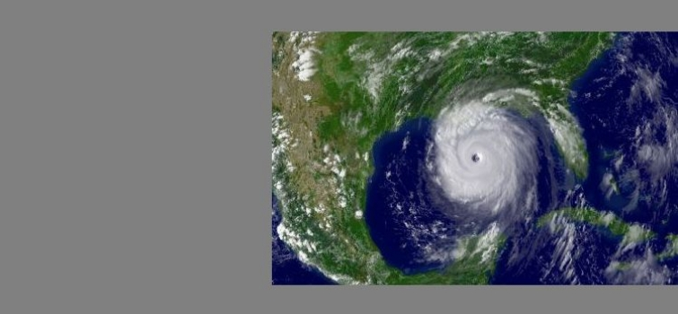

-

Secretary Bodman visits DOE's Oak Ridge National Laboratory to tour the facility and host an all-hands meeting with lab employees.

Secretary Bodman announces that the University of Colorado takes overall honors in the 2005 Solar Decathlon on the National Mall.
- 
Katrina, now a Category 4 hurricane, makes landfall at 6:10 a.m. in Plaquemines Parish, Louisiana, just south of Buras, with winds of 140 mph.
Return to Timeline of Events: 2004
Continue to Timeline of Events: 2006
Jump to month: February | March | April | May | June | July | August | September | October | November | December
January 3, 2005
The Delphi Corp., a partner in DOE's advanced fuel cell development program, reports that it has exceeded the power density level required to meet the government's $400 per kilowatt cost goal for fuel cells. Meeting the cost target is essential if fuel cells are to expand beyond their current niche markets into widespread commercial use. At $400 per kilowatt-nearly one-tenth the cost of power-generating fuel cells currently sold on the market-fuel cells would compete with traditional gas turbine and diesel electricity generators and become viable power suppliers for the transportation sector. The Department has set 2010 as the timeframe for low-cost fuel cells to be sufficiently developed for commercial markets.
January 4, 2005
At the opening of the first session of the 109th Congress, Senate Majority Leader Bill Frist (R-TN) and House Speaker J. Dennis Hastert (R-IL) both say passing energy legislation is a top priority. "There is work left undone from the last Congress, and we need to act on it," Frist notes. "America is long overdue for an energy policy." Hastert describes the "volatile energy market" as an "impediment to our continued economic prosperity."
January 10, 2005
The Department awards North Wind Paducah Cleanup Company LLC a $302 million small business contract to perform environmental remediation and waste management activities at the DOE's Paducah Gaseous Diffusion Plant in Paducah, Kentucky. "The Department of Energy is proud to support President Bush's Small Business Agenda by awarding large-scale cleanup contracts like this to small businesses," says Secretary Spencer Abraham.
January 10, 2005
The Department awards LATA-Parallax Portsmouth LLC, a small business joint venture between Los Alamos Technical Associates Inc. and Parallax Inc., a $141 million small business contract to perform environmental remediation and waste management activities at the DOE's Portsmouth Gaseous Diffusion Plant in Piketon, Ohio.
January 11, 2005
President Bush, in an interview by the Wall Street Journal, states that he is "looking forward to working with Congress on whether or not we can move forward on nuclear power. I believe nuclear power answers a lot of our issues. It certainly answers the environmental issue, and those people who are concerned about whether or not we can continue burning coal."
January 11, 2005
The Secretary of Energy Advisory Board's Nuclear Energy Task Force recommends that the federal government provide $3.6 billion in financial incentives to the first 12 power plants to be built under DOE's Nuclear Power 2010 program.
January 11, 2005
Secretary Abraham announces that the U.S. and the Commonwealth of the Bahamas recently signed an agreement to install specialized radiation detection equipment, originally developed by DOE's National Nuclear Security Administration laboratories, at one of the Bahamas' busiest seaports to detect hidden shipments of nuclear and other radioactive material. The Bahamas will be the first country in the Caribbean to deploy this type of detection system. "Helping better protect the world's maritime shipping network from nuclear smuggling is an important objective we are working to achieve," the Secretary says. "Successful detection of radioactive materials as they cross a country's borders is fundamental in stopping a nuclear or dirty bomb attack."
January 13, 2005
Secretary Abraham, in a speech to the Council on Foreign Relations in Washington, D.C., calls on the global community to join in implementing a comprehensive nuclear nonproliferation strategy to address 21st century challenges. "The challenge of confronting terrorism falls to every nation," he notes. "A global threat demands global participation." The Secretary discusses four broad areas that need to be addressed for a workable nonproliferation strategy: 1) the U.S. must fund and finish programs, such as the Megaports initiative, that it has committed to doing; 2) the Russian government must increase its global leadership role; 3) other nations must increase involvement in confronting terrorist threats, and 4) the International Atomic Energy Agency and the Nuclear Nonproliferation Treaty must be effective nonproliferation tools.
January 14, 2005
Secretary Abraham, in his last scheduled public speech before the Generation IV International Forum, calls for an increased emphasis on nuclear energy. "It's time for rational people on all sides of the nuclear debate," he tells reporters after the speech, "to come together and attempt to find an acceptable way to ensure that the advantages of nuclear energy are part of our energy and environmental solutions." The Secretary notes that "of all the forms of emission-free energy available today, only nuclear power can deliver large blocks of dispatchable electricity regardless of the weather, time of day or geographic location."
January 14, 2005
Secretary Abraham announces that DOE's 3rd annual "What's Next" Expo will be held in the Detroit area. The expo is part of DOE's Scientists Teaching And Reaching Students (STARS) science education initiative announced by Secretary Abraham in July 2004. The What's Next Expo is designed to showcase the newest, most innovative, cutting edge scientific and technological advances as a way to interest students in pursuing careers in math and science.
January 18, 2005
The Department announces that it has decided to exercise the five year option in the Washington TRU Solutions LLC ("WTS") contract to continue managing and operating DOE's Waste Isolation Pilot Plant (WIPP), located in New Mexico. The option DOE exercised is a part of the WIPP contract that was competitively procured in 2000. The WTS contract will now run through September 30, 2010, with an estimated value over the five year timeframe of approximately $704 million.
January 18, 2005
The Department's National Renewable Energy Laboratory in Golden, Colorado, dedicates the Biomass Surface Characterization Laboratory, a $2.85 million facility featuring an array of electron and optical microscopes and other advanced research tools to probe biomass-to-energy processes at the most basic atomic and molecular levels. The facility will provide scientists with the tools to explore the chemical and biological reactions that can transform renewable plant and waste materials into useful sources of energy.
January 19, 2005
Secretary Abraham announces the resignation of Deputy Secretary Kyle McSlarrow.
January 19, 2005
Secretary of Energy-designate Samuel W. Bodman appears at his confirmation hearing before the Senate Committee on Energy and Natural Resources. "The Department of Energy, with its critical national and economic security missions," Secretary-designate Bodman says in his opening statement, "is one of our most important federal agencies. But, at the same time, it is perhaps one of the least understood by much of the general public. That lack of understanding might be partly a result of its name, which belies the broad spectrum of the department's scientific research and national defense missions." The Secretary-designate says that passage of an energy bill is among his top priorities. "Comprehensive energy legislation should address the energy challenges that we face, including high prices for gasoline, heating oil and natural gas, power blackouts and shortages in some regions of natural gas and electricity," he observes. "It is, in my view, among the most important matters to come before Congress." He also says that he would be "an energetic advocate" of oil development in the Arctic National Wildlife Refuge in Alaska.
January 19, 2005
Secretary Abraham, in a farewell session with reporters, notes his disappointment in failing to pass energy legislation. "I wish we could have finished the energy bill in the last Congress," he says. "We were so close. With the new numbers in the Senate this year, it will pass." Observing that "in the world of energy, things don't happen overnight," the Secretary states that an impediment to achieving significant change in energy policy is public indifference. "The magnitude of the questions," he says, "is not fully appreciated." The Secretary states that among the accomplishments he is "proudest of" are DOE's introduction of programs supporting "breakthrough new technologies" in carbon sequestration, clean coal, and hydrogen.
January 20, 2005
George W. Bush is sworn-in for second term as president of the United States.
January 24, 2005
A U.S. District Court judge in Washington State rules that the Department cannot ship mixed transuranic (TRU) waste to the Hanford Site unless it deals with the waste that is already on the site. The state had filed suit in March 2003 to stop the shipment of waste to the site from other DOE sites that are being cleaned up. The Department plans to eventually ship all of the waste to the underground repository at the Waste Isolation Pilot Plant in New Mexico.
January 26, 2005
The Department's National Nuclear Security Administration (NNSA) and the United Kingdom's Trade and Industry Ministry sign a Memorandum of Understanding (MOU) to assist the permanent shutdown of the final operating weapons grade plutonium production reactor in the closed nuclear city of Zheleznogorsk, Russia. Under this MOU the United Kingdom will contribute $20M to NNSA's Elimination of Weapons Grade Plutonium Production Program (EWGPP). "The signing of this MOU is a major step in our collaborative efforts to address our mutual nonproliferation objectives," says NNSA Administrator Linton Brooks. "When the Zheleznogorsk reactor is finally shut down, there will be one less source of nuclear weapons grade plutonium in the world."
January 28, 2005
The Department's National Nuclear Security Administration (NNSA) announces it has imposed a major fee reduction of over $3 million on the University of California for management failures at the Los Alamos National Laboratory during Fiscal Year 2004. NNSA's action represents the largest fee reduction imposed on a national laboratory in DOE's history. The decision follows a year in which laboratory operations were suspended to address serious safety and security problems, including a report that two classified computer disks could not be located at the New Mexico laboratory. "Although multiple investigations have confirmed that the 'missing' disks never existed, the major weaknesses in controlling classified material revealed by this incident are absolutely unacceptable, and the University of California must be held accountable for them," says NNSA Administrator Linton Brooks in announcing the penalty.
January 31, 2005
Samuel W. Bodman is unanimously confirmed by the Senate to serve as the next Secretary of Energy.
January 31, 2005
The Department announces the award of funding for 10 projects developing "microhole" technologies aimed at slashing the costs and reducing the environmental impacts of drilling America's oil and gas wells. The initiative involves developing technologies associated with drilling wells smaller than 4¾ inches in diameter and related downhole micro-instrumentation. The ultimate result of industry broadly embracing this technology could be a sea change in the way that the nation's oil and gas producers explore for, drill, and monitor wells. The total value of the projects is nearly $14.5 million, with DOE providing $7.7 million and industry partners contributing $6.8 million.
Top of page
February 1, 2005
Sam Bodman is sworn in as the 11th Secretary of Energy. "It is a great honor and personal privilege to serve President Bush and the American people as Secretary of Energy," says Secretary Bodman. "I look forward to working with the fine men and women of the Energy Department to advance this department's critically important missions, including preserving America's pre-eminence in the physical sciences, ensuring the responsible stewardship of our nation's nuclear weapons stockpile, advancing our international nuclear nonproliferation efforts, and ensuring reliable, secure, affordable and environmentally responsible supplies of energy for our growing economy."
February 1, 2005
The Idaho National Laboratory (INL) is established, combining the research and development components of the Idaho National Engineering and Environmental Laboratory and Argonne National Laboratory West. Battelle Energy Alliance, LLC, assumes management and operational responsibility for the new laboratory, with the Office of Nuclear Energy, Science and Technology taking over programmatic responsibility within DOE. The Department intends INL to become the nation's premier laboratory for nuclear energy research, development, demonstration, and education.
February 1, 2005
Tennessee Governor Phil Bredesen's proposed state budget contains $8 million for funding the Joint Institute for Neutron Sciences research facility at DOE's Oak Ridge National Laboratory (ORNL). Located adjacent to ORNL's Spallation Neutron Source, the state facility will house researchers from both ORNL and the University of Tennessee who will study ways to improve the structure of materials. This is the third joint institute funded by the state and shared by ORNL and the University of Tennessee. The Joint Institute for Computational Sciences is open. Construction on the Joint Institute for Biological Sciences is scheduled to begin in late spring. All are located at ORNL.
February 2, 2005
President Bush highlights energy in the State of the Union address. "We need reliable supplies of affordable, environmentally responsible energy," the President notes. "Nearly four years ago, I submitted a comprehensive energy strategy that encourages conservation, alternative sources, a modernized electricity grid, and more production here at home -- including safe, clean nuclear energy. My Clear Skies legislation will cut power plant pollution and improve the health of our citizens. And my budget provides strong funding for leading-edge technology-from hydrogen-fueled cars, to clean coal, to renewable sources such as ethanol. Four years of debate is enough: I urge Congress to pass legislation that makes America more secure and less dependent on foreign energy."
February 3, 2005
Secretary Bodman speaks to headquarters DOE employees in the auditorium of the Forrestal building in Washington, D.C. "My engineering background might give you some insight into my management style," he tells them. "The way I see it, my job is to identify opportunities and challenges and to empower results. In other words, I want to help you get things done right, and help you get the credit you deserve." Noting that at the age of 66 his appointment as energy secretary is not a career move, the Secretary says "I don't need credit for this. I came to serve this country, this president and this administration. To the extent that I have a reputation, it's already behind me." The Secretary speaks briefly on each of DOE's four major mission areas but spends more time on safety than on any other topic, noting that safety "is particularly important for agencies such as the DOE, with our high-tech science facilities, our large environmental cleanup operations, our work with nuclear materials, and our major construction projects. I want each and every employee of this department, whatever your job, to know that your personal safety and security is extremely important to me. As the leader of this department, I believe it is my moral and ethical responsibility to take this seriously, and I do. I also take it personally."
February 7, 2005
The White House unveils the Fiscal Year 2006 budget proposal. At $23.4 billion, the Department's FY 2006 budget is $475 million below the FY 2005 appropriation. Of DOE's four "business lines," the National Nuclear Security Administration (NNSA) is $9.397 billion, a $233 million or 2.5 percent increase above the FY 2005 appropriation; for energy activities, the FY 2006 budget request at $2.567 billion is up $73 million or 3.0 percent compared to the FY 2005 appropriation; funding for the Office of Science is $3.463 billion, down $137 million or 3.8 percent; environment programs are $7.343 billion, down $502 million or 6.4 percent. The FY 2006 NNSA budget reflects the transfer from the Office of Environmental Management (EM) of funding for legacy cleanup and waste management activities at seven NNSA sites. The amount transferred to NNSA in FY 2006 for these activities is $222.3 million. Secretary Bodman notes that the budget cuts reflect tough choices made in a fiscally constrained time.
February 8, 2005
President Bush announces his intention to nominate Clay Sell, of Texas, to be Deputy Secretary of Energy. Mr. Sell currently serves as Special Assistant to the President for Legislative Affairs. He previously served as Special Assistant to the President for Economic Policy. Prior to these appointments, he served as Staff Director and Republican Clerk for the Energy and Water Development Subcommittee.
February 9, 2005
Secretary Bodman announces that the Bush Administration will add nine additional medical screening centers as part of DOE's Former Worker Medical Screening Program at no additional cost to the taxpayer. Under this expansion, the program will offer all former DOE employees, contractors, and subcontractors free medical examinations to determine if possible exposure to harmful substances during their employment resulted in subsequent illness. "This is a clear case where improving the efficiency and effectiveness of a meaningful government program has a direct impact on people's lives," the Secretary notes. "These Americans' efforts helped to cement not only our freedom, but America's victory in the Cold War and the security we know today. Providing this screening is the first step in getting these former workers the medical care they so rightly deserve."
February 9, 2005
The Department and the United Kingdom's Department of Trade and Industry (DTI) announce the execution of two contract modifications providing for DOE's accelerated purchase of the Advanced Mixed Waste Treatment Project (AMWTP) located at the Idaho National Laboratory and the resolution of contract claims associated with work conducted by BNFL at the AMWTP site and the East Tennessee Technology Park (ETTP) in Tennessee. BNFL, a commercial firm wholly-owned by the British government, constructed the AMWTP under a fixed-price contract awarded in 1996. BNFL has been decontaminating and decommissioning three buildings at the ETTP under a fixed-price contract awarded in 1997. Under the AMWTP contract modification, DOE will pay $428 million for the AMWTP facilities. DOE will also bring in another contractor to operate the facilities.
February 9, 2005
Secretary Bodman provides testimony before the House Committee on Energy and Commerce hearing (pdf) on the President's Fiscal Year 2006 budget proposals for DOE.
February 15, 2005
The Department awards two new contracts to deliver crude oil to the Strategic Petroleum Reserve (SPR) this spring under the Royalty-In-Kind (RIK) exchange program. Shell Trading (US) Company and Vitol SA Inc. submitted the best offers and are awarded four-month contracts to deliver 78,000 barrels per day to the SPR, beginning in April.
February 15, 2005
A collaborative effort by scientists and managers from 26 international institutions, including DOE's Lawrence Berkeley National Laboratory, announce the successful first season of construction of what will become the world's largest scientific instrument, a neutrino telescope dubbed IceCube, located at the South Pole. Building the telescope requires drilling 70 one-and-one-half-mile-deep holes in the Antarctic ice utilizing a hot-water drill and then lowering long strings of basketball-sized digital optical modules (DOMs)-4,200 in all-into the holes, where they will be frozen in place. Berkeley Lab researchers are responsible for the unique electronics package inside the DOMs that will enable IceCube to pick out the rare signal of a high-energy neutrino colliding with a molecule of water. The first string, with 60 detectors, was successfully lowered into the ice in late January.
February 15, 2005
Secretary Bodman provides testimony before the Senate Armed Services Committee on the Administration's priorities for nuclear weapons and threat reduction programs and DOE's environmental cleanup program.
February 16, 2005
The Department announces that the Provinces of Alberta and British Columbia have joined Saskatchewan and Manitoba as Canadian partners in the Regional Carbon Sequestration Partnership program, the centerpiece of North American efforts to validate and deploy carbon sequestration technologies. The program, a network of federal and state agencies, as well as private sector entities, will determine the most suitable technologies, regulations, and infrastructure for future carbon capture, storage, and sequestration in different areas of the country.
February 16, 2005
Secretary Bodman announces the selection of twelve projects that will increase the energy efficiency of passenger and commercial vehicles while maintaining low emissions. With a total value of $175 million (50 percent, or $87.5 million contributed by the private sector) the projects will focus on development of advanced combustion engine and waste heat recovery technologies. "Partnerships like these are a critical component of our strategy to protect the environment and reduce our nation's dependence on foreign sources of oil, two priorities of President Bush," Secretary Bodman says. The projects selected support the administration's goal of improving efficiency of internal combustion engines from 30 percent to 45 percent by 2012 for passenger vehicles and from 40 percent to 55 percent by 2013 for commercial vehicles, while meeting cost, durability, and emissions constraints. Vehicles utilizing these technologies would use 10 to 15 percent less fuel than current vehicles.
February 16, 2005
Secretary Bodman, appearing before the House Committee on Science, defends the $3.5 billion budget request for the Office of Science. "In light of the emphasis that this Budget places on deficit control," he notes, "this level of funding for the Office of Science signals a strong commitment on the part of the Administration to invest in the promise of basic research for discoveries that leapfrog today's technology. The priorities we have set are clear. Through the 2006 Budget, we will fully support Presidential initiatives in fusion and hydrogen, we will continue strong support for other Administration priorities such as nanotechnology and information technology, we will complete-on time and within budget-unique scientific facilities that will maintain and enhance research in areas we believe offer the greatest potential for broad advances in future energy technologies."
February 18, 2005
Assistant Secretary of Energy David Garman joins representatives of ChevronTexaco, Hyundai-Kia, and UTC Fuel Cells at the opening of a hydrogen fueling station in Chino, California. The station is a major part of DOE's Hydrogen "Learning Demonstration," which brings together automobile makers and energy companies to test fuel cell vehicles and hydrogen fueling systems in real-world conditions. Hyundai Tucson and Kia Sportage SUVs, powered by fuel cells manufactured by UTC Fuel Cells, will operate throughout Southern California and refuel at the ChevronTexaco hydrogen station. Of particular significance is the on-site production of hydrogen from natural gas. Natural gas, with an existing distribution infrastructure, is critical to the eventual transition to the hydrogen economy. This station will also have the future capability to convert other renewable fuel sources, such as ethanol, into hydrogen for refueling fuel cell vehicles.
February 23, 2005
Secretary Bodman announces that DOE will expand a beryllium screening program to include former employees of now-defunct DOE beryllium vendor companies across the country. Beryllium is a component used in nuclear weapons built by DOE. In solid form, it is not harmful, but small particles of beryllium-containing materials produced as by-products of machining or other processes can spread through the air and be breathed into the lungs. "Through no fault of their own, these Cold Warriors were left out in the cold when their former employers went out of business," notes the Secretary. "By expanding this screening program, President Bush and the Department of Energy honor these men and women and the important role they played in strengthening our national security."
February 24, 2005
President Bush and Russian Federation President Vladimir Putin meet in Bratislava, Slovakia. The two leaders issue a joint statement on Nuclear Security Cooperation, pledging to "expand and deepen cooperation . . . with the goal of enhancing the security of nuclear facilities in our two countries and, together with our friends and allies, around the globe." This cooperation includes enhancing an emergency response capability to deal with a nuclear or radiological incident, working together to help ensure full implementation of UN Security Council Resolution 1540, sharing "best practices" for the sake of improving security at nuclear facilities, enhancing of the "security cultures" in both countries, and working jointly to develop low-enriched uranium fuel for use in any U.S.- and Russian-design research reactors in third countries now using high-enriched uranium fuel. The two leaders establish a bilateral Senior Interagency Group chaired by Secretary Bodman and Russian Atomic Energy Director Alexander Rumyantsev to oversee implementation of these cooperative efforts. The two leaders also issue a joint statement on U.S.-Russian Energy Cooperation and direct the U.S. and Russian Ministers of Energy and Commerce to meet to develop recommendations on how to intensify and develop further the bilateral energy dialogue, including through the mechanisms of the Energy Working Group and the Commercial Energy Dialogue. The two leaders set a goal of identifying concrete trade and investment opportunities for U.S. and Russian firms, including in support of Russia's pipeline and liquefied natural gas development and increased Russian oil and gas imports to U.S. markets; and targeting the initiation of several such projects no later than 2008.
February 25, 2005
The North American Energy Working Group (NAEWG), a group of senior energy officials from Canada, Mexico and the United States, releases the "North American Natural Gas Vision," a trilateral report by the three governments that includes information on the natural gas market in the North American region, including forecasts through the year 2012. "This document is a key cooperative effort among the three countries to address one of the most important energy issues facing us all," Secretary Bodman says. "It demonstrates the commitment of the three governments to encourage a secure, competitive, efficient and growing North American gas market that will help fuel the economies and environmental objectives of the three countries."
February 25, 2005
In remarks to Los Alamos National Laboratory employees, Secretary Bodman tells them that "our nation counts on you for great science, but it also counts on you to safeguard our nation's most precious scientific information." He adds that "the bottom line-on this issue, on the safety and security concerns, and others-is that this laboratory continues to confront some long-standing challenges. I am aware of the fact that I am the fourth Secretary of Energy who has come out here in recent years to talk with you about them. These are serious matters, and I intend to take them seriously."
February 28, 2005
Secretary Bodman joins representatives from fellow Generation IV International Forum (GIF) partners-Canada, France, Japan, and the United Kingdom-to sign the first multilateral agreement in history aimed at the development of next generation nuclear energy systems. "This research agreement will accelerate an international effort to develop Generation IV nuclear energy systems nuclear energy technology that will be safer, more reliable, cost-effective, and more proliferation-resistant than any technology available today," says the Secretary. The partners have identified six next generation technologies for development including: the Gas Cooled Fast Reactor, the Sodium Fast Reactor, the Lead-Cooled Fast Reactor, the Molten Salt Reactor, the Supercritical Water Reactor, and the Very High Temperature Reactor. The last technology concept forms the basis of the U.S. research program to develop an ultra-safe, economic nuclear system that will be designed to produce electricity and hydrogen with substantially less waste and without emitting air pollutants or greenhouse gases. The agreement allows participating countries to go beyond coordination of research and to begin conducting joint research projects all over the world.
Top of page
March 1, 2005
Secretary Bodman, in a speech before the Western Governors Association, expresses the need for Congress to pass comprehensive energy legislation and highlights the benefits of the proposal for the western U.S. "The energy challenges facing our country today are greater than they have ever been," the Secretary states. "We face rapid growth in the demand for oil and natural gas at a time when domestic production is hard-pressed to keep up, and world energy markets are increasingly characterized by price volatility and political uncertainty. Passing the energy bill is among the most important matters to come before this Congress, and I intend to be an enthusiastic advocate for the passage of energy legislation this year."
March 2, 2005
Senate Appropriations Committee Chairman Thad Cochran (R-MS) announces that all DOE funding will be consolidated under the Appropriations subcommittee on energy and water development. Prior to this, most DOE funding was under the energy and water development subcommittee, but some, including fossil energy and energy conservation, was under the Interior and related agencies subcommittee. This move brings the Senate Appropriations Committee in line with the House Appropriations Committee, which the previous month had consolidated DOE funding under its energy and water development subcommittee. "The changes will allow for a more orderly approach to the appropriations process," notes Cochran.
March 4, 2005
The Department's Fermi National Accelerator Laboratory dedicates the Main Injector Neutrino Oscillation Search (MINOS) experiment. Speaker of the U.S. House of Representatives J. Dennis Hastert, Jr., (R-IL) unveils the beam and sends the first pulses of neutrinos, produced at Fermilab's Main Injector accelerator, on a path through the earth from Fermilab, near Chicago, to a particle detector located 450 miles away and a half-mile underground in the historic Soudan iron mine in northeastern of Minnesota. The MINOS experiment will probe the origins, mass, and changeable nature of the subatomic particles. "Fermilab's MINOS experiment is the newest and most powerful tool in investigating the properties of the neutrino," notes Secretary Bodman. "This research may lead to new insights into the early history and evolution of the universe."
March 4, 2005
President Bush nominates David K. Garman as Under Secretary of Energy for Energy, Science and Environment. Garman has served as Assistant Secretary for Energy Efficiency and Renewable Energy (EERE) since 2001.
March 9, 2005
Secretary Bodman answers questions on DOE and energy policy on an "Ask the White House" online interactive forum.
March 9, 2005
Following an introduction by Secretary Bodman, President Bush discusses energy policy in a speech at the Franklin County Veterans Memorial in Columbus, Ohio. The President reiterates his call for a "sound energy bill" that meets "four objectives: it must promote conservation and efficiency, increase domestic production, diversify our energy supply, and modernize our energy infrastructure." He adds that while "we pursue all these goals, we will also uphold our responsibility to be good stewards of the environment"
March 9, 2005
Secretary Bodman provides testimony before the House Appropriations subcommittee on energy and water development on the President's fiscal year 2006 budget proposals for DOE.
March 10, 2005
Secretary Bodman issues a statement regarding the Clean Air Interstate Rule (CAIR) released by the Environmental Protection Agency (EPA). "Coming from the business world," the Secretary observes, "I know that a reliable, affordable energy supply is essential to America's continued economic growth and job creation. As we build our economic success, we must also put commonsense environmental measures in place. While the CAIR rules are an important first step that will dramatically cut emissions from coal-fired power plants in the Eastern United States, it's important for the Congress to pass the President's Clear Skies legislation which will reduce emissions by seventy percent nationwide. By passing the Clear Skies bill, the Congress can insure that this and future generations not only have energy security, but a clean environment."
March 10, 2005
The Department notifies the CH2M Hill Hanford Group, Inc. (CH2M Hill)-that it will fine the company $316,250 for violations of the department's nuclear safety requirements. CH2M Hill is DOE's contractor responsible for storage of highly radioactive and hazardous liquid waste at the Hanford Tank Farms near Richland, Washington.
March 11, 2005
In his first visit to DOE's Savannah River Site, Secretary Bodman tours the Defense Waste Processing Facility.
March 15, 2005
The Department and the EPA, at an ENERGY STAR® awards ceremony, honor 50 companies, organizations, and government entities that have helped to significantly reduce greenhouse gases while improving energy efficiency. ENERGY STAR® is a voluntary, market-based partnership to reduce air pollution through increased energy efficiency. Americans with the help of ENERGY STAR® saved $10 billion in energy costs over the past year alone. "A key part of the President's comprehensive energy plan is conservation," says Secretary Bodman. "These outstanding leaders' innovative approach to conservation has helped to dramatically improve America's energy security."
March 16, 2005
The Department announces its award of a $39.9 million small business contract to Swift & Staley Mechanical Contractors, Inc. for infrastructure services activities at the Paducah Gaseous Diffusion Plant in Paducah, Kentucky.
March 16, 2005
The Department announces its award of a $48.8 million small business contract to Theta Pro2Serve Management Company, LLC (TPMC) for infrastructure services at the Portsmouth Gaseous Diffusion Plant in Piketon, Ohio.
March 16, 2005
Secretary Bodman issues a statement pertaining to potentially falsified documentation on the Yucca Mountain project. DOE contractors reviewing documents discovered multiple e-mails written from 1998 to 2000 in which certain employees of the U.S. Geological Survey working on the Yucca Mountain project "may have falsified documentation of their work." The documentation, relating to computer modeling involving water infiltration and climate, is required as part of DOE and the Nuclear Regulatory Commission's quality assurance programs that verify the accuracy and credibility of work that has been completed. The Department, the Secretary notes, "has initiated a scientific investigation of the data and documentation that was part of this modeling activity. If in the course of that review any work is found to be deficient, it will be replaced or supplemented with analysis and documentation that meets appropriate quality assurance standards to ensure that the scientific basis of the project is sound."
March 16, 2005
The Senate votes, 51 to 49, to keep a provision in its budget resolution calling for oil and gas development on the coastal plain of Alaska's Arctic National Wildlife Refuge (ANWR). Secretary Bodman releases a statement declaring that the vote "is a victory for American consumers, America's economy and America's energy security. Alaska's frozen tundra has the potential to yield billions of barrels of domestically produced oil."
March 16, 2005
Secretary Bodman announces the award of $62.4 million for 32 clean coal research projects. The projects will advance President Bush's goal to develop a coal-fired zero emissions power plant and other energy-related policy initiatives in energy, climate, and hydrogen, including the FutureGen zero-emissions power plant of the future. "Coal is our most abundant fuel resource," the Secretary says. "It's important that we find ways to use it in a cleaner, more efficient way in order to provide the energy needed to continue our economic growth and job creation."
March 16, 2005
With oil prices reaching a record high of $56 per barrel, Organization of the Petroleum Exporting Countries (OPEC) ministers agree to raise their 27-million-barrel per day crude production ceiling by 500,000 b/d, or 1.8percent, beginning April 1. They leave open the possibility of a further 500,000 b/d increase.
March 21, 2005
Jeffrey Clay Sell is sworn in as Deputy Secretary of Energy.
March 22, 2005
The Department releases revised guidelines for voluntary reporting of greenhouse gas emissions, sequestration, and emission reductions. The program was established by section 1605(b) of the Energy Policy Act of 1992 and will help fulfill President Bush's directive that DOE enhance its voluntary reporting program to reduce overall greenhouse gas emissions while improving the accuracy, verifiability, and completeness of emissions data reported to the federal government.
March 23, 2005
Linton Brooks, administrator of the Department's National Nuclear Security Administration (NNSA), announces that Lawrence Livermore National Laboratory's BlueGene/L supercomputer developed through the Advanced Simulation and Computing program for NNSA's Stockpile Stewardship efforts has performed 135.3 trillion floating point operations per second (teraFLOP/s) on the industry standard LINPACK benchmark. This makes the BlueGene/L, which is at only the half-system point of its installation, the fastest supercomputer in the world.
March 23, 2005
Secretary Bodman announces that Washington Closure, LLC, has been awarded the contract to manage the clean up and remediation of the Columbia River Corridor at DOE's Hanford Reservation in the state of Washington. The Columbia River Corridor is composed of roughly 210 square miles along the outer edge of the Hanford Site and includes projects in Hanford's 100 Area, where nine plutonium production reactors created material for nuclear weapons; the 300 Area, where uranium fuel was fabricated and laboratory facilities reside; facilities in the 400 Area (except the Fast Flux Test Facility); and two complex and highly-radioactive burial grounds in the 600 Area (618-10 and 618-11). "Awarding this important and high-profile contract is a major step forward in the Hanford cleanup," the Secretary says. "It will get us the best of what both large and small businesses have to offer-experience, innovation, and performance-to ensure we meet our commitment of safe, protective cleanup of this key area within the Hanford Site." The contract is valued at approximately $1.9 billion over a seven-year period. The goal is to clean up this area of the Hanford Site by 2015, with incentives for Washington Closure to accelerate completion to 2012.
March 23, 2005
The DOE announces the selection of CH2M-WG Idaho, LLC, as the contractor responsible for the Idaho Cleanup Project through the year 2012 at the Idaho National Laboratory. CH2M-WGI will be responsible for treatment and disposal of radioactive waste; retrieval, disposal and other remediation related to buried waste; safe management of spent nuclear fuel; disposition of nuclear materials; disposition of reactor and non-reactor nuclear facilities; and other environmental remediation activities. "We are pleased to announce this selection to ensure a seamless transition and continued excellence in our cleanup effort," Secretary Bodman says. "The Idaho Cleanup Project is a very complex and technically challenging project requiring significant skill and expertise. By awarding this contract, we are one step closer to achieving the vision laid out by Idaho's 2012 plan." The contract, which runs through September 20, 2012, is valued at about $2.9 billion.
March 23, 2005
President Bush, Canadian Prime Minister Paul Martin, and Mexican President Vicente Fox announce the establishment of the Security and Prosperity Partnership of North America. Concerning the energy component of the partnership, they agree to "strengthen North America's energy markets by working together, according to our respective legal frameworks, to increase reliable energy supplies for the region's needs and development, by facilitating investment in energy infrastructure, technology improvements, production and reliable delivery of energy; by enhancing cooperation to identify and utilize best practices, and to streamline and update regulations; and by promoting energy efficiency, conservation, and technologies such as clean coal, carbon capture and storage, hydrogen and renewable energy."
March 24, 2005
The Department's Oak Ridge National Laboratory announces that analysis by fuel economy specialists at the lab indicates that the current high price of gasoline is not nearly high enough to curb demand. A very inelastic response of driving and fuel demand exists in the short run due to higher gas prices. Doubling the price to about $4 per gallon would result in only about a five percent decrease in fuel demand and driving.
March 24, 2005
The Department's Bonneville Power Administration asks Pacific Northwest residents to help combat the economic effects of a dry winter by efficiently using electricity. The sixth straight winter in a row of low precipitation produced the lowest cumulative runoff on record. The primary effects would be financial. Low precipitation is reducing hydro system performance for utilities and suppliers in the region, which increases power purchases from other, more costly sources. Low water in rivers is also shrinking expected surplus sales revenues. This puts upward pressure on rates.
March 30, 2005
Secretary Bodman and Canadian Foreign Affairs Minister Pierre Pettigrew announce the signing of a memorandum of understanding (MOU) to assist with the permanent closure of one of the final operating weapons-grade plutonium production reactors in Russia. Under the MOU, Canada will contribute $9 million Canadian (U.S. $7 million) to DOE's Elimination of Weapons-Grade Plutonium Production (EWGPP) program. The goal of the EWGPP program is to permanently shut down three Russian nuclear reactors and replace them with fossil energy plants. The Russian government has agreed to permanently shut down the reactors once replacement energy is provided. "Ending the production of weapons-grade plutonium is a non-proliferation priority for the United States and the international community," says Secretary Bodman.
March 30, 2005
The Department announces more stringent criteria for clothes washers carrying the ENERGY STAR® label. The new, tougher ENERGY STAR® criteria will for the first time include water savings requirements. "President Bush's National Energy Policy calls for cleaner, more efficient technologies, and the ENERGY STAR® program is an important piece of that solution," notes Secretary Bodman. The new criteria will go into effect on January 1, 2007, when tougher minimum efficiency standards for all clothes washers take effect. Under these guidelines, ENERGY STAR®-qualified models will be 36 percent more efficient than the washers meeting the minimum requirements.
March 30, 2005
The Nuclear Regulatory Commission authorizes the construction of a U.S. Mixed-Oxide (MOX) Fuel Fabrication Facility at the DOE's Savannah River Site in South Carolina. The facility will fabricate nuclear reactor fuel using surplus U.S. weapon-grade plutonium. Once the fuel is irradiated in existing commercial power reactors, the plutonium can no longer be readily used for nuclear weapons. A similar facility is being built in Russia to implement the U.S.-Russian Plutonium Management and Disposition Agreement, which commits both countries to dispose of 34 metric tons each of surplus weapon-grade plutonium. "Issuing the permit for construction of a MOX facility in South Carolina is the crucial next step in the MOX program," says Secretary Bodman in a statement. "It is a key milestone in our efforts to dispose of surplus weapons grade plutonium in the U.S. and Russia."
Top of page
April 1, 2005
The Department's Los Alamos National Laboratory, using the world's most powerful flash X-ray machine, successfully capture a high-resolution X-ray image following detonation of a mock-up of imploding weapon components. The experiment, conducted at the Dual Axis Radiographic Hydrodynamic Test Facility, supports continued maintenance of a key nuclear weapon component of the U.S. nuclear deterrent, without a return to underground testing. Over the next few months, the Los Alamos team will compare the radiographic image with computer models, closely examine any differences and refine the models so they more accurately represent weapon behavior.
April 4, 2005
Secretary Bodman announces that Eric Burgeson has been named DOE's Chief of Staff.
April 4, 2005
The governors of California, Nevada, Utah, and Wyoming announce that they have agreed to a four state partnership for development of a high-capacity electric transmission line-the Frontier Line-from Wyoming to California. The line will deliver up to 12,000 megawatts of power generated from renewable and conventional energy resources such as wind and clean coal from energy-rich Rocky Mountain states to load centers on the West Coast. "This proposal exhibits the boldness and innovation the West is traditionally known for," notes Secretary Bodman in a statement, "as well as the multi-state cooperation and big-picture thinking required to make regional markets thrive."
April 6, 2005
The Department announces its preferred alternatives for remediation of the Moab, Utah, Uranium Mill Tailings Remedial Action Project Site: active groundwater remediation, and offsite disposal of the tailings pile and other contaminated materials to the proposed Crescent Junction disposal site.
April 7, 2005
Guy Caruso, Administrator of DOE's Energy Information Administration (EIA), presents the Summer 2005 Motor Gasoline Outlook at a press conference as part of the Summer Energy Outlook Conference sponsored by EIA, DOE's Office of Energy Assurance, and the National Association of State Energy Officials. Regular gasoline prices are projected to average $2.28 per gallon during this April through September summer season, 38 cents above the level the previous summer. Monthly average prices are projected to peak at about $2.35 per gallon in May. Summer motor gasoline demand is projected to average 9.3 million barrels per day, up 1.8 percent over the previous summer despite higher prices. The higher demand is caused by the increasing number of drivers and vehicles, and increasing miles traveled per vehicle. Crude oil prices are projected to remain above $50 per barrel for the rest of 2005 and 2006. High world oil demand, sparked by robust economic growth, continues to keep crude oil prices high and to increase competition for gasoline imports.
April 7, 2005
The Department's Oak Ridge National Laboratory announces that installation of what will be the world's largest unclassified supercomputer-the Cray XT3-has begun. The Cray XT3 will be able to perform 100 trillion calculations per second in different science disciplines by 2006.
April 11, 2005
Secretary Bodman announces, as part of the Bush Administration's aggressive effort to reduce the amount of weapons-grade nuclear material worldwide, that DOE has begun to convert research reactors from using highly-enriched uranium (HEU) to low-enriched uranium fuel (LEU) at the University of Florida and Texas A&M University. This effort, by DOE's National Nuclear Security Administration and Office of Nuclear Energy, Science and Technology, are the latest steps under the Global Threat Reduction Initiative's Reduced Enrichment for Research and Test Reactors program. As part of this program, NNSA is minimizing the use of HEU in civilian nuclear programs by converting research reactors and radioisotope production processes to the use of LEU fuel and targets. HEU is weapons-grade nuclear material that can be used to make a nuclear weapon or dirty bomb. "These research reactors are secure and used for peaceful purposes," Secretary Bodman says, "but by converting them to use low-enriched uranium, we are taking a significant step forward to ensure that weapons-usable nuclear material does not fall into the wrong hands."
April 13, 2005
The Department's National Nuclear Security Administration (NNSA) announces that radioactive materials that could be used in a dirty bomb were removed from a University of Hawaii facility on March 28, 2005, and have arrived safely at a secure NNSA facility. NNSA removed a substantial quantity of radioactive cobalt-60 from a research irradiator at the university. The removal is part of a national effort by NNSA's U.S. Radiological Threat Reduction Program to recover and secure radiological materials that could be used to make a dirty bomb.
April 13, 2005
In an analysis (pdf) of the National Commission on Energy Policy's Ending the Energy Stalemate report (see December 8, 2004, entry), DOE's Energy Information Administration finds that of the group's recommendations increasing Corporate Average Fuel Economy (CAFE) standards and new building and appliance efficiency standards would have the largest impacts on energy production, consumption, prices, and fuel imports. Overall, if the group's policy recommendations were implemented, demand and greenhouse gas emissions would fall, prices would rise, and the nation's gross domestic product (GDP) would be down about .4 per cent annually from what it otherwise would be.
April 16, 2005
President Bush, in his weekly Saturday radio address, discusses rising gas prices and the need for Congress to pass comprehensive energy legislation.
April 19, 2005
The Department awards a new five-year contract to the University of California to manage and operate its Lawrence Berkeley National Laboratory (LBNL). The award is the result of the first competition of the management and operating (M&O) contract for the laboratory since its inception. The value of the new five-year contract is an estimated $2.3 billion. Berkeley Lab's $469 million annual budget is funded by the DOE's Office of Science, as well as other DOE programs, other government agencies, and private industry.
April 19, 2005
The final remaining shipment of radioactive, transuranic (TRU) waste at DOE's Rocky Flats Site in Golden, Colorado, leaves the property on a truck bound for the Waste Isolation Pilot Project (WIPP), DOE's underground waste repository in Carlsbad, New Mexico. The Rocky Flats Site, which formerly manufactured components for nuclear weapons, is being converted to a National Wildlife Refuge managed by the U.S. Fish and Wildlife Service. "Through these efforts, we're taking an industrial facility and turning it into a place where animals and other wildlife can flourish," notes Secretary Bodman. "A project of this magnitude and complexity has never before been attempted anywhere in the world."
April 20, 2005
In a speech to the U.S. Hispanic Chamber of Commerce Conference, President Bush promotes an affordable, reliable energy supply. "For the sake of American workers and families, we have got to reduce our dependence on foreign sources of energy," President Bush declares. "It's a matter of economic security and it's also a matter of national security. When America depends on only a handful of countries for nearly 60 percent of our oil, the danger of major energy disruption grows. Some of you are old enough to remember the '70s, when we rationed the gasoline. The President of the United States and Congress have a responsibility to make sure America never returns to those days. And we've got to meet that responsibility."
April 20, 2005
Secretary Bodman answers questions on DOE and energy policy on an "Ask the White House" online interactive forum.
April 20, 2005
The Department's Office of Fossil Energy releases a series of reports indicating that there is a potential to recover over 43 billion barrels of additional oil from currently "stranded" oil resources in six regions of the United States by using "state-of-the-art" carbon dioxide enhanced oil recovery (CO2-EOR) technologies.
April 21, 2005
The House passes an energy bill by a vote of 249 to 183. "I congratulate the House of Representatives for passing comprehensive energy legislation," Secretary Bodman says in a statement. "This bill will put us on a path to affordable and reliable supplies of energy in the future by improving energy efficiency; increasing domestic energy supplies; diversifying our energy sources to include more renewable energy sources; and modernizing our energy delivery system. For the good of American families, the American economy and America's national security, I call on the Senate to pass energy legislation and get a bill to the President's desk by this summer."
April 22, 2005
The Department's National Nuclear Security Administration (NNSA) announces an agreement with the Ukraine government to install radiation detection equipment at key land borders, airports and seaports in Ukraine. The equipment, provided under the NNSA Second Line of Defense Program (SLD), is designed to detect, deter and interdict illicit movements of nuclear and other radioactive materials. "The United States and Ukraine recognize the need to work cooperatively to stem the threat posed by the trafficking of nuclear and other radioactive materials," says NNSA Administrator Linton F. Brooks. "This agreement will enable our countries to further international nonproliferation efforts and better protect the citizens of Ukraine, the United States and other countries against nuclear terrorism."
April 25, 2005
Secretary Bodman and Latvian Minister of Environment Raimonds Vejonis sign an agreement that will allow collaboration in nonproliferation and threat reduction areas. The agreement provides for repatriation to Russia of Soviet-origin nuclear fuel from Latvia's shutdown research reactors at Salaspils, security enhancement of the reactor site, and safe and secure storage of Latvia's nuclear materials. "Reducing the treat of nuclear terrorism is a priority for President Bush and my department, and this agreement with Latvia is another important step in our effort to keep nuclear weapons material out of the hand of terrorists," says Secretary Bodman.
April 25, 2005
In a significant milestone for scientific grid computing, eight major computing centers successfully complete a challenge to sustain a continuous data flow of 600 megabytes per second (MB/s) on average for 10 days from CERN in Geneva, Switzerland, to seven sites in Europe and the U.S. The total amount of data transmitted during this challenge-500 terabytes-would take about 250 years to download using a typical 512 kilobit per second household broadband connection. The exercise was part of a series of service challenges designed to test the global computing infrastructure for the Large Hadron Collider (LHC) currently being built at CERN to study the fundamental properties of subatomic particles and forces. The service challenge participants included DOE's Brookhaven National Laboratory and Fermi National Accelerator Laboratory in the U.S.
April 27, 2005
In a speech at the National Small Business Week Conference, President Bush states that the administration's strategy for dealing with dependence on foreign energy supply is to "recognize the transformational power of technology." The President identifies four steps toward greater energy independence: 1) apply technology to increase domestic production from existing energy resources, including oil, natural gas, coal, and safe, clean nuclear power, 2) harness technology to create new sources of energy such as hydrogen and ethanol, 3) use technology to become better conservers of energy, such as with energy-efficient windows and high efficiency light bulbs, and 4) make sure other nations can take advantage of technological advances to reduce their own demand. Secretary Bodman issues a statement on the speech.
April 28, 2005
President Bush begins his nationally televised Press Conference by noting that millions of Americans "are hurting because of higher gasoline prices." He states that his administration is "doing everything we can to make gasoline more affordable. In the near-term, we will continue to encourage oil producing nations to maximize their production. Here at home, we'll protect consumers. There will be no price gouging at gas pumps in America." The President adds that the nation "must address the root causes that are driving up gas prices. Over the past decade, America's energy consumption has been growing about 40 times faster than our energy production." President Bush reiterates the four steps to reduce the nation's dependence on foreign sources of energy and encourages the Senate to pass the energy bill.
Top of page
May 2, 2005
Thomas Jefferson High School for Science & Technology from Alexandra, Virginia, wins the 2005 National Science Bowl® championship for the fourth consecutive year. The school team triumphed over 62 other regional team champions.
May 2, 2005
The Ministerial Meeting of the International Energy Agency (IEA) opens in Paris. Secretary Bodman heads the U.S. delegation. The Secretary emphasizes three principles: 1) energy security is a global concern requiring global solutions; 2) advanced technology is vital in solving the world's energy problems; 3) IEA members must invest today to meet their energy goals for the future.
May 5, 2005
The Department announces the selection of five new research and development (R&D) projects worth more than $3 million to develop new mining technologies that will reduce energy use and lower costs. DOE will contribute nearly $1.88 million to this effort, matched by $1.13 million from the private sector.
May 6, 2005
Secretary Bodman and Illinois Governor Rod Blagojevich participate in a ceremony laying the cornerstone for the Center for Nanoscale Materials under construction at DOE's Argonne National Laboratory. The new center is one of five new Nanoscale Science Research Centers being built by DOE's Office of Science to provide researchers with world-class facilities for the interdisciplinary study of matter at the atomic scale. The state is an equal financial partner with DOE on the project, with each side contributing $36 million. "We fully expect the fields of energy, medicine, information technology and homeland security to be touched - if not transformed - by the work that will take place here," Secretary Bodman says in his speech. "Researchers working with this Nanoscale Materials Center will create new products that just might impact every man, woman, and child and the planet."
May 10, 2005
Secretary Bodman opens an exhibition of energy-efficient clean diesel and advanced hybrid commercial vehicles in Washington, D.C. Several of the vehicles were developed as part of DOE's 21st Century Truck Partnership, a government and industry initiative to develop advanced technologies for fuel-efficient commercial vehicles. "The progress we are making in heavy truck technology under the 21st Century Truck Partnership," Secretary Bodman notes in his remarks, "will provide the United States with significant efficiency and safety benefits, and cleaner air, while helping to maintain America's international competitiveness in this key industry sector."
May 16, 2005
Secretary Bodman announces that DOE's Office of Science is seeking proposals to support innovative, large-scale computational science projects to enable high-impact advances through the use of advanced computers not commonly available in academia or the private sector. Projects currently funded are helping to reduce engine pollution and to improve our understanding of the stars and solar systems and human genetics.
May 16, 2005
President Bush tours the Virginia BioDiesel Refinery in West Point, Virginia, and in a speech discusses biodiesel and alternative fuel resources. The White House issues a Fact Sheet on developing renewable fuels and clean diesel technologies.
May 18, 2005
The Department's National Nuclear Security Administration (NNSA) issues a Preliminary Notice of Violation (PNOV) to BWXT Pantex, the primary contractor for the Pantex site, for nuclear safety violations associated with the development and use of a procedure to remove a cracked explosive component from a retired nuclear weapon. The component unexpectedly cracked during routine dismantlement activities on January 8, 2004. BWXT Pantex management conducted a thorough assessment of the activities leading to the use of the procedure and found that a number of procedural errors had occurred.
May 19, 2005
The Department's National Nuclear Security Administration (NNSA) issues a final Request for Proposals (RFP) for the competitive selection of a management and operating contractor for Los Alamos National Laboratory located in Los Alamos, New Mexico.
May 22, 2005
Secretary Bodman begins a trip to Moscow, Russia; Baku, Azerbaijan; and Kiev, Ukraine, where he will hold discussions on a variety of energy and nuclear safety issues, including encouraging the development of diverse energy resources, promoting market transparency and investment, and advancing nuclear nonproliferation. "Russia, Azerbaijan and Ukraine are important international partners of the United States," the Secretary says. "I look forward to discussing ways that we can strengthen cooperation on energy and nuclear nonproliferation issues and ensure the continue growth of the energy sector in this region."
May 23, 2005
Secretary Bodman meets with Russian Federation Minister of Industry and Energy Victor Khristenko to discuss progress in achieving the Bratislava Initiatives on energy cooperation agreed to by Presidents Bush and Putin in February 2005.
May 24, 2005
Secretary Bodman meets with Russian Atomic Energy Director Alexander Rumyantsev to discuss progress in achieving the Bratislava Nuclear Security Initiatives agreed to by Presidents Bush and Putin in February 2005.
May 25, 2005
In a joint mission by the U.S., Latvia, Russia, and the International Atomic Energy Agency, three kilograms of highly enriched uranium that could be used for nuclear weapons is returned to the Russian Federation from Latvia under the Global Threat Reduction Initiative of DOE's National Nuclear Security Administration (NNSA). "The recovery, return and eventual elimination of highly enriched uranium is an important component of the administration's campaign to reduce the threat posed by dangerous nuclear and radiological material worldwide," says NNSA Administrator Linton F. Brooks. The uranium will be down-blended to low enriched uranium at a secure facility in Podol'sk, Russia.
May 25, 2005
Secretary Bodman represents the U.S. at ceremonies to open the Baku-Tbilisi-Ceyhan (BTC) Pipeline in Baku, Azerbaijan. The $2.9 billion East-West transport corridor will increase the amount of oil exported from the region and will provide a new oil delivery route, from Azerbaijan, through Georgia, to Turkey and beyond, for delivery to world markets. The pipeline is the first direct link between the landlocked Caspian Sea and the Mediterranean. "The BTC Pipeline's completion means that more Caspian oil can reach global markets faster, and in a commercially viable and environmentally safe manner," notes the Secretary in his remarks. "The BTC pipeline strengthens both global and regional energy security by increasing the flow of oil to market."
May 25, 2005
Secretary Bodman announces the selection of over $64 million in seventy research and development projects aimed at making hydrogen fuel cell vehicles and refueling stations available, practical, and affordable for American consumers by 2020. The initiatives are part of a comprehensive portfolio of basic and applied research, technology development, and learning demonstration projects aimed to significantly advance President Bush's Hydrogen Fuel Initiative. "We hope that through our ingenuity, investment and effort, hydrogen vehicles will someday be as commonplace as cars we drive today," says the Secretary.
May 25, 2005
Secretary Bodman and Agriculture Secretary Mike Johanns announce a Memorandum of Understanding (MOU) between DOE and the Department of Agriculture aimed at the development of hydrogen technologies, particularly the more cost-effective production of hydrogen from biomass resources. "Biomass technologies hold great promise for our rural communities and are a promising route to renewable hydrogen production," Secretary Bodman says. "By working together to make production of hydrogen from biomass more cost-effective, we are moving the nation one step closer to a hydrogen economy and energy independence." This effort is part of President Bush's $1.2 billion Hydrogen Fuel Initiative.
May 25, 2005
President Bush tours a Washington D.C. Shell Station, the first integrated gasoline/hydrogen station in North America, and discusses energy research and development issues with reporters.
May 25, 2005
Deputy Secretary Clay Sell answers questions on DOE and energy policy on an "Ask the White House" online interactive forum.
May 26, 2005
Secretary Bodman and his Ukrainian counterpart David Zhvaniya, Minister for Emergencies, sign an Implementing Arrangement to partner together to advance international nonproliferation goals by improving the security of Ukraine's radioactive materials. "This Implementing Arrangement is a significant step forward in our partnership to safeguard these radioactive materials and advance the security of the region," Secretary Bodman says.
May 26, 2005
Secretary Bodman meets with Ukraine President Viktor Yuschenko to discuss development and diversification of Ukraine's energy sector and ways to increase foreign investment in market-based energy ventures there. The Secretary also gives remarks at the Energy Security Conference at the Kiev Polytechnic Institute.
May 26, 2005
The Senate Energy & Natural Resources Committee approves the comprehensive energy bill. Secretary Bodman, in a statement, says the committee's bipartisan leadership "brings America one step closer to reducing our dependence on foreign sources of energy." The bill next moves to consideration by the full Senate.
May 26, 2005
The Department and the U.S. Council for Automotive Research announce a $70 million, five year agreement to develop lightweight, high-strength materials that increase fuel efficiency through a reduction of vehicle weight without compromising safety. "Lighter weight vehicles can make a noticeable improvement in fuel efficiency," says Secretary Bodman.
May 26, 2005
Secretary Bodman announces a public-private partnership between DOE, industry, and academia aimed at significantly improving the vehicle efficiency of cars and trucks through advances in technology. The partnership consists of six projects with a value including cost share of over $14 million. The projects were selected in three technology areas as part of DOE's FreedomCAR and Vehicle Technologies Program.
May 26, 2005
The Department's Brookhaven National Laboratory dedicates the QCDOC supercomputer at the RIKEN BNL Research Center. QCDOC stands for quantum chromodynamics on a chip. The computer was designed and built by Brookhaven Lab, Columbia University, IBM, RIKEN (The Institute of Physical and Chemical Research) in Japan, and the University of Edinburgh. The computer has 10 teraflops of peak computing power, which makes it capable of performing 10 trillion arithmetic calculations per second, with sustained speeds of five teraflops. The $5-million computer took three years to build and is funded by RIKEN, with infrastructure support from DOE's Office of Science. The computer will be used primarily for physics research, performing the numerical calculations of quantum chromodynamics, the physics theory that describes the interactions of quarks and gluons, the basic building blocks of matter. QCDOC takes up only 100 square feet of floor space.
May 27, 2005
The Department publishes a Notice of Inquiry in the Federal Register seeking public comment on an $18 billion loan guarantee program to encourage the construction of a pipeline that will bring Alaskan natural gas to the continental U.S. The pipeline will provide access to Alaska's 35 trillion cubic feet of proven natural gas reserves and would be a major step forward in meeting America's growing energy needs and reducing dependence on foreign sources of energy. "Further developing our domestic energy supply is a key priority of the President's National Energy Policy," Secretary Bodman says. "When the Alaska pipeline is fully operational, it will have the potential to add nearly 2 trillion cubic feet of natural gas each year to our supply, which would help to further stabilize prices."
May 31, 2005
Secretary Bodman and the Deputy Chairman of the Planning Commission of India, Dr. Montek Singh Ahluwlia, meet in Washington, DC, to launch a new bilateral U.S.-India Energy Dialogue. The goal of the Dialogue is to promote increased trade and investment in the energy sector by working with the public and private sectors to further identify areas of cooperation and collaboration. "By working together, the United States and India can help secure clean, reliable, affordable sources of energy to keep both our economies and the economies of the world expanding," says the Secretary.
Top of page
June 1, 2005
The Department's Idaho National Laboratory formally opens the Center for Advanced Energy Studies (CAES). CAES, a public/private partnership, will conduct science, engineering, and technology development. Four new research centers will each focus on a specific nuclear technology arena. Secretary Bodman, in his remarks, tells the CAES partners that they would be "instrumental in reviving nuclear power."
June 2, 2005
Secretary Bodman on his first visit to DOE's Hanford site speaks at an all-hands meeting and tours the Pacific Northwest National Laboratory, clean-up sites and waste facilities, and the historic B Reactor. At the K East Basin, the Secretary has the opportunity to pump sludge under the supervision of nuclear chemical operators.
June 7, 2005
Secretary Bodman, joined by eleven CEOs from major energy companies, rings the opening bell at the New York Stock Exchange. The Secretary is in New York to discuss the need for Congress to pass comprehensive energy legislation.
June 9, 2005
The Department announces that 18 teams from the U.S., Canada, and Spain will travel to Washington, DC on October 7-16, 2005, to participate in the second solar decathlon competition to be held on the National Mall. The solar decathlon presents cutting edge architecture, engineering, and technology all of which can all be applied in building homes to generate their own energy, not simply consume it.
June 9, 2005
Secretary Bodman announces that DOE will provide $100 million to further develop carbon sequestration technologies used to capture and permanently store greenhouse gases. The research is part of President Bush's Global Climate Change Initiative, which is designed to reduce greenhouse gas intensity by 18 percent by 2012 in part through the development of significant sequestration technologies. "By moving carbon sequestration technology from the laboratory to the field with today's grants," the Secretary says, "we are another step closer to significantly reducing greenhouse gas emissions while maintaining the important role coal plays in America's energy mix."
June 9, 2005
Secretary Bodman announces the completion of the merger of the former Office of Electric Transmission and Distribution and Office of Energy Assurance into the new Office of Electricity Delivery & Energy Reliability (OE) whose goal is to lead national efforts to modernize the electric grid, enhance security and reliability of the energy infrastructure, and facilitate recovery from disruptions to energy supply. As we saw in the blackouts of 2001 and 2003, a faulty infrastructure can cost our economy billions of dollars," notes Secretary Bodman. "America's electricity infrastructure is old; in some places it is approaching antiquity. It is critical that we take a comprehensive look and proactively work to address any potential problems." The merger was recommended by Congress and approved by Secretary Bodman in February 2005.
June 9, 2005
Secretary Bodman announces the "Energizing America for Energy Security" Tour. The Secretary and other DOE officials, including Deputy Secretary Clay Sell, will travel the country over the summer to speak directly to the American people about the need for Congress to pass comprehensive energy legislation before the August Congressional recess.
June 10, 2005
Secretary Bodman announces that the planned fill of the Strategic Petroleum Reserve (SPR) will be complete in August, when the SPR reaches 700 million barrels of oil. President Bush directed the fill in November 2001 as a means to strengthen the nation's energy security in the wake of the 9/11 terrorist attacks. When the fill is complete, approximately 159 million barrels of crude oil will have been added to the nation's emergency stockpile. "Taking steps to prepare for a severe disruption in the oil markets is vital to our economic and national security," Secretary Bodman says. By filling the Strategic Petroleum Reserve to its highest level in history, American consumers and businesses are more protected today in the event of a major disruption in our oil supplies, whatever the cause."
June 13, 2005
Nine "Early Career" researchers funded by DOE are honored for their work ranging from the development and synthesis of nanoscale materials to improved medical diagnostic imaging. DOE's scientists are among 58 researchers supported by eight federal departments and agencies receiving the Presidential Early Career Award for Scientists and Engineers.
June 13, 2005
Secretary Bodman kicks off the "Energizing America for Energy Security" Tour with a visit to Habitat for Humanity's first "true net-zero energy home" in Wheat Ridge, Colorado. The zero energy home is designed to produce as much energy as it consumes.
June 14, 2005
The Department notifies Safety and Ecology Corporation, the contractor responsible for radiological safety at the Portsmouth Gaseous Diffusion Project in Portsmouth, Ohio, that it will fine the company $55,000 for violating DOE's regulations prohibiting retaliation against employees who raise nuclear safety concerns.
June 14, 2005
The Department announces that it is making nearly $2.5 million available to 18 Native American tribes to advance the use of renewable energy and energy efficient technologies on tribal lands.
June 15, 2005
President Bush, in a speech at the 16th annual Energy Efficiency Forum in Washington, D.C., reiterates the four steps needed to reduce the nation's dependence on foreign sources of energy. "By advancing the national dialogue on the future of energy, you're helping us support the cause of energy efficiency," the President tells the forum. "And that's critical for our economy and it's critical for the future of this nation." In a Fact Sheet released by the White House, President Bush calls on Congress to pass a National Energy Policy.
June 15, 2005
Secretary Bodman answers questions on DOE and energy policy on an "Ask the White House" online interactive forum.
June 16, 2005
The Department's Oak Ridge Office announces ownership transfer of four office buildings at the East Tennessee Technology Park, formerly the K-25 gaseous diffusion plant site, for private sector use. The office buildings, totaling approximately 200,000 square feet, are now under the ownership of the Community Reuse Organization of East Tennessee, a not-for-profit corporation established to foster diversification of the regional economy by re-utilizing DOE property for private sector investment and job creation. The transfer of the four buildings allows DOE to avoid $6.4 million in demolition costs.
June 22, 2005
President Bush, in a speech at the Calvert Cliffs Nuclear Power Plant in Lusby, Maryland, discusses energy policy. The President urges Congress to pass the energy bill and reiterates his four steps to reducing the nation's dependence on foreign energy sources.
June 23, 2005
David K. Garman is sworn in by Secretary Bodman as Under Secretary of Energy for Energy, Science and Environment.
June 28, 2005
The Senate passes the comprehensive energy bill, which now goes to a House-Senate Energy Bill Conference Committee. Secretary Bodman issues a statement commending the Senate.
June 28, 2005
In Moscow, Russia, the ministers representing the six International Fusion Reactor (ITER) parties, including Dr. Raymond L. Orbach, Director of DOE's Office of Science, announce that ITER will be located at the European Union site in Cadarache, France. Two sites had been competing to host the $5 billion test bed for harnessing nuclear fusion to generate electricity. In November 2003, the European Union selected Cadarache, France, as its candidate site; Japan's contender was in Rokkasho. The U.S. had supported the Japanese site on technical grounds.
June 28, 2005
The Department's Stanford Linear Accelerator Center (SLAC) announces that the E158 experiment has made vital new observations that illuminate the nature of the weak force. Using extraordinary precision, E158 determined that the strength of the weak force acting on two electrons lessens when the electrons are far apart. The precision measurements required enormous numbers of electrons. The SLAC linear accelerator sent 500 billion electrons in a single bunch to a target, and repeated this 700 million times. In half of these electron bunches, the electrons were polarized to spin right-handed. The electrons in the remaining bunches were polarized to spin left-handed. Some electrons entering the target scattered off target electrons by exchanging a mediator particle. The mediator is almost always a photon, which transmits the electromagnetic force (visible light, radio waves, x-rays). The collaboration's challenge was to find the rate of rare events; those one in a million electron-electron scatters that took place by exchanging a Z particle, which mediates the weak force.
June 29, 2005
Secretary Bodman announces that DOE's Office of Science is seeking proposals to support computational science projects to enable high-impact advances through the use of some of the world's most powerful supercomputers. Successful proposers will be given the use of nearly 90 million computing hours at DOE's scientific computing centers in Berkeley, California, and Oak Ridge, Tennessee.
June 30, 2005
Secretary Bodman announces the establishment of a DOE Office in Beijing, China. The new office will support DOE's cooperative efforts with China on energy and nuclear security issues. "Through the U.S.-China Energy Policy Dialogue, and with on-site assistance from the new DOE office," states the Secretary, "we can enhance our cooperation to promote energy efficiency, diversify our energy supplies, expand the use of clean energy technologies, as well as continue our mutual efforts to increase nuclear security in both our nations."
June 30, 2005
The Department's Energy Information Administration (EIA) reports that for the second consecutive year, the U.S. has seen a reduction in the greenhouse gas intensity (emissions per unit of economic output) in its economy. EIA's data shows that in 2004, greenhouse gas intensity was reduced by 2.6 percent. In 2003, the reduction was 2.1 percent. In 2002, President Bush committed the nation to reducing greenhouse gas intensity of the U.S. economy by 18 percent by 2012. Total emissions from burning fossil fuels increased by 1.7 percent in 2004.
Top of page
July 5, 2005
Secretary Bodman announces that DOE is providing 38 states with $26.5 million in State Energy Program (SEP) grants for Fiscal Year 2005. This is part of $44 million to be distributed to the fifty states, the District of Columbia, and five U.S. territories in this fiscal year. SEP grants support and encourage state energy-saving and efficiency goals.
July 7, 2005
Secretary Bodman travels to West Virginia to tour energy-related sites and promote passage of energy legislation. "Many of the people locked inside Washington's Beltway tend to forget just where our energy comes from," the Secretary notes. "They forget that it's the end result of a long process that began in the mines and coal fields in places like West Virginia." In a speech at West Virginia University, Secretary Bodman announces $3 million in funding under the University Coal Research Program (UCR), DOE's longest-running student-teacher research grant initiative.
July 11, 2005
The Bush Administration announces a major new partnership aimed at reducing household energy costs by 10 percent over the next decade. The Partnership for Home Energy Efficiency will provide energy saving solutions and support research and implementation of a new generation of energy efficiency technologies. DOE, the Department of Housing and Urban Development, and the Environmental Protection Agency will consolidate and coordinate home energy savings information for consumers on a web portal, http://www.energysavers.gov/, giving American access to the latest innovations to make their homes more energy efficient. Goals of the Partnership include expand efforts to promote ENERGY STAR® products; develop durable, comfortable, affordable homes that use 40 to 50 percent less energy; develop new energy services to provide homeowners with greater savings; deliver energy efficiency savings to low income and subsidized housing; continue to invest in innovative research in building science technologies, practices, and policies; and by 2020, provide design technologies and building practices to allow cost-effective net-zero energy homes.
July 14, 2005
The House-Senate Energy Bill Conference Committee has its first meeting. "The members of the Conference Committee know that a clean, affordable, reliable source of energy is essential to continued economic growth and job creation in America," Secretary Bodman says in a statement. "While there are differences between the House and Senate versions of the bill, I also believe there is considerable common ground."
July 14, 2005
Secretary Bodman tours the world's largest amorphous silicon thin-fill solar manufacturing plant in Auburn Hills, Michigan, and joins United Solar Ovonic leaders in breaking ground on a new 160,000 square foot facility that will increase production and create 200 new jobs. The materials produced by the United Solar facility are a product of over 20 years of research by the company and DOE's National Renewable Energy Laboratory.
July 14, 2005
Secretary Bodman and the U.S. Council for Automotive Research (USCAR) announce an agreement that could reach $125 million over five years to develop advanced high-performance batteries for electric, hybrid electric, and fuel cell vehicle applications. As part of the new agreement, DOE's FreedomCAR Program and USCAR's U.S. Advanced Battery Consortium will split the cost of research and development.
July 18, 2005
Secretary Bodman announces that $92.5 million has been awarded to 19 states to improve the energy efficiency of low-income family homes. DOE's Weatherization Assistance Program makes improvements such as plugging air leaks, improving insulation, and tuning air conditioning and heating systems, which reduces energy waste and lowers energy bills. Through DOE's weatherization program, approximately 92,300 homes will be upgraded this year.
July 25, 2005
The Department issues its final environmental impact statement (EIS) for the Moab Uranium Mill Tailings Remedial Action Project Site located on the bank of the Colorado River. The EIS details the preferred option of removing the tailings pile and contaminated materials, along with ground water remediation. The tailings will be moved, predominately by rail, to the proposed Crescent Junction, Utah, site, more than 30 miles from the Colorado River. "Taking all facts into account, we believe the recommendations provide the best solution to cleaning up Moab and protecting the river," says Secretary Bodman.
July 28, 2005
The House of Representatives passes the Energy Policy Act of 2005. "Ensuring America's future energy security has been a priority for President Bush since his early days in office," Secretary Bodman says in a statement, "and I commend the House of Representatives, particularly Chairman Barton and Ranking Member Dingell, for their efforts on this broad-based legislation that helps achieve that goal."
July 29, 2005
The Senate passes the Energy Policy Act of 2005. "Today, the United States Senate took an historic step to secure America's economic and energy future by sending comprehensive energy legislation to President Bush for his signature," notes Secretary Bodman in a statement. "The bipartisan efforts to craft this legislation, led in the Senate by Senators Domenici and Bingaman, have produced a bill of which we all can be proud."
Top of page
August 1, 2005
Secretary Bodman visits (pdf) DOE's Oak Ridge National Laboratory to tour the facility and host an all-hands meeting with lab employees. The Secretary tells the employees that he is pleased and enthusiastic, on the whole, with the Energy Policy Act, particularly in that it has measures to encourage more nuclear energy generation. When asked what methods of generation he would stress if he were an energy executive, he replies "nuclear," and then, "solar." Although noting some reservations about the viability of hydrogen and fuel cell technologies as energy alternatives, the Secretary stresses the need for energy research. "We will," he says, "run out of natural gas and oil." Secretary Bodman observes that "DOE is not the best managed organization I have ever encountered," and he gives the agency's organizational stovepiping and poor communication across organizations as examples of areas he would like to improve.
August 2, 2005
Secretary Bodman visits DOE's Paducah Gaseous Diffusion Plant in Paducah, Kentucky, to tour the facility and host an all-hands meeting with employees.
August 2, 2005
The National Academy of Sciences (NAS) National Research Council (NRC) issues a report titled: Review of the Research Program of the FreedomCAR and Fuel Partnership. The report, which builds on an earlier NRC report, The Hydrogen Economy: Opportunities, Costs, Barriers, and R&D Needs, presents an evaluation of the Partnership s research efforts on hydrogen-fueled transportation systems, and provides findings and recommendations about technical directions, strategies, funding, and management. "I am pleased that the National Academy of Sciences agrees that we are on the right path with our research and development, says Secretary Bodman in a statement. "We agree that this effort could lead to enormous benefits for the nation and the world. I also am pleased that the report notes the promise of our government's partnership with the energy and automotive industries to develop advanced energy-efficient passenger vehicles and the infrastructure to support them."
August 2, 2005
The Department announces the achievement of a significant milestone in DOE's Clean Coal Technology Demonstration Program by completing a project, with JEA, the public utility of Florida, in which JEA's Northside Generating Station was converted into one of the cleanest burning coal-fired power plants in the world. As part of the 8-year, $320 million cost-shared project, JEA installed state-of-the-art technology known as circulating fluidized bed combustion in a 300-megawatt combustor-triple the size of any previous demonstration-and demonstrated that the technology is commercially ready and environmentally friendly. The advanced system replaced a natural gas and oil-fired unit that was outdated, less reliable, and more expensive to operate.
August 4, 2005
The Department notifies the Bechtel Jacobs Company (BJC) that it will fine the company $247,500 for violations of DOE's nuclear safety requirements. The company is DOE's contractor responsible for environmental cleanup and waste management at its Oak Ridge Reservation in Tennessee.
August 4, 2005
The Department announces that awards totaling $20 million will go to 17 universities and eight DOE national laboratories to use mathematics to help solve problems such as the production of clean energy, pollution cleanup, manufacturing ever smaller computer chips, and making new "nanomaterials." The research is funded under the Office of Science's "Multiscale Mathematics" program.
August 5, 2005
The Department releases Vision and Framework for Strategy and Planning, a report that provides strategic direction and guidance to the ten Federal agencies developing new and advanced global climate change technologies. The document is organized around six complimentary goals and outlines actions need to achieve these goals: 1) reducing emissions from energy use and infrastructure; 2) reducing emissions from energy supply; 3) capturing and sequestering carbon dioxide; 4) reducing emissions of other greenhouse gases; 5) measuring and monitoring emissions; and 6) bolstering the contributions of basic science to climate change. "The Vision and Framework is a comprehensive strategy that promotes the use of technology to reduce greenhouse gas emissions," states Secretary Bodman. "It provides guidance and direction, along with goals, to Federal agencies involved in climate change research and development. By bringing together the varied expertise of agencies throughout the federal government and establishing a plan for the future, the Vision and Framework will guide us for years to come."
August 8, 2005
President Bush, following a tour of DOE's Sandia National Laboratory in Albuquerque, New Mexico, signs the Energy Policy Act of 2005. "This bill will strengthen our economy and it will improve our environment, and it's going to make this country more secure," the President tells lab employees. "The Energy Policy Act of 2005 is going to help every American who drives to work, every family that pays a power bill, and every small business owner hoping to expand." The President issues a statement and the White House a Fact Sheet on the act.
August 8, 2005
Secretary Bodman answers questions on the Energy Policy Act of 2005 on an "Ask the White House" online interactive forum.
August 11, 2005
The Department announces the first two projects selected under DOE's new Fuel Cell Coal-Based Systems program. The projects will be conducted by two research teams-one led by General Electric Hybrid Power Generations Systems and the other by Siemens Westinghouse Power Corporation. The goal is to develop the fuel cell technology required for central power stations to produce affordable, efficient, environmentally-friendly electricity from coal. Projects will be conducted in three phases. During Phase I, the teams will focus on the design, cost analysis, fabrication, and testing of large-scale fuel cell stacks fueled by coal synthesis gas. Central to the Phase I effort will be the resolution of technical barriers with respect to the manufacture and performance of larger-sized fuel cells. Phases II and III will focus on the fabrication of aggregate fuel cell systems and will culminate in proof-of-concept systems to be field tested for a minimum of 25,000 hours. These systems will be sited at existing or planned coal gasification units, potentially at DOE's FutureGen facility, a prototype of the fossil-fueled power plant of the future.
August 12, 2005
The Department's Office of Science releases a report (pdf) describing the basic research needed to produce "revolutionary progress in bringing solar energy to its full potential in the energy marketplace." The report resulted from a workshop of 200 scientists held earlier this year, April 18-21.
August 12, 2005
Secretary Bodman marks the second anniversary of the Northeast blackout during which 50 million Americans lost electricity by highlighting important progress that has been made to make North American electricity grids more reliable
August 17, 2005
Deputy Secretary Clay Sell announces (pdf) that workers have completed work on two major Tri-Party Agreement (TPA) cleanup milestones at DOE's Hanford Site. The two milestones include: 1) retrieval of a significant portion of suspect transuranic (plutonium) waste from Hanford's low-level burial grounds five months ahead of schedule; and 2) the completion of an 11-year effort to upgrade infrastructure of the double-shell tanks system, the largest mixed-waste tank storage complex in the U.S., at a cost savings of approximately $30 million dollars.
August 19, 2005
The Department's Oak Ridge National Laboratory announces that the Spallation Neutron Source (SNS) has met a crucial milestone on its way to completion in June 2006-operation of the superconducting section of its linear accelerator. The SNS linac has two sections: a room-temperature, or warm, section, which completed its commissioning in January, and a superconducting, or cold, section, which operates at temperatures hundreds of degrees below zero. The cold linac provides the bulk of the power that drives the linac, and has already achieved an energy level of 865 MeV, which is about 75 percent of the speed of light. The SNS linac is the world's first high energy, high power linac to apply superconducting technology to the acceleration of protons.
August 24, 2005
The Department's National Nuclear Security Administration (NNSA) and Libya's National Bureau of Research and Development sign an arrangement under NNSA's Sister Laboratory program that establishes a foundation for new scientific cooperation. A result of ongoing collaboration following Libya's historic decision to dismantle its weapons of mass destruction, the arrangement demonstrates the commitment of the United States and Libya to the peaceful uses of nuclear energy in accordance with the Treaty on the Nonproliferation of Nuclear Weapons. Joint activities under this program will focus on research reactor applications, including nuclear medicine, and other applied scientific endeavors.
August 25, 2005
The Department notifies Fluor Fernald, Inc., that it will fine the company $33,000 for violations of DOE's nuclear safety requirements. Fluor Fernald is DOE's contractor responsible for environmental cleanup activities at the Fernald Closure Project.
August 26, 2005
Hurricane Katrina threatens the U.S. Gulf of Mexico coast. Forecasters project that Katrina will strengthen into a Category 4 hurricane. Forecast models indicate that Katrina will make landfall on the U.S. gulf coast between the eastern coast of Louisiana and the coast of Mississippi.
August 26, 2005
The Department issues its first Katrina Situation Report (pdf) at 10:30 a.m., prior to Katrina's actual landfall. The Situation Reports provide information about power outages and the strength and predicted path of the hurricane. Subsequent Situation Reports on Katrina will come out twice and sometimes three times a day.
August 26, 2005
Oil companies begin evacuating some workers from production platforms in the eastern Gulf of Mexico. Some platforms can continue producing via remote operation.
August 28, 2005
Katrina reaches Category 5 strength about 250 miles south-southeast of the mouth of the Mississippi River. Winds reach their peak intensity of 175 mph, and the pressure falls to 902 mb, the fourth lowest pressure on record.
August 28, 2005
The Department's Strategic Petroleum Reserve shuts down all operations in New Orleans and personnel are evacuated.
August 28, 2005
Oil refineries in the projected path of Katrina are shut down. Oil platform evacuations continue. By the time Katrina strikes, 75 percent of the 819 manned production platforms in the Gulf of Mexico are evacuated.
August 29, 2005
Katrina, now a Category 4 hurricane, makes landfall at 6:10 a.m. in Plaquemines Parish, Louisiana, just south of Buras, with winds of 140 mph. Katrina is very large with hurricane force winds extending 125 miles from the center. Continuing northward, Katrina passes just to the east of New Orleans and makes a second landfall near the Louisiana/Mississippi border at 10:00 a.m., with maximum winds of near 125 mph (Category 3 status). Katrina weakens throughout the day but is still a hurricane 100 miles inland near Laurel, Mississippi.
August 29, 2005
President Bush declares a major disaster exists in the states of Louisiana, Mississippi, and Alabama and orders Federal aid to supplement State and local recovery efforts.
August 29, 2005
Oil prices spike in response to Katrina, reaching almost $71 a barrel in early trading but falling back to $67 in the afternoon.
August 29, 2005
Natural gas prices on the futures market reach record levels during the day over concern about the potential damage to gas production. Prices shot up by as much as 23% during the day before settling at the still record price of $10.85 per thousand cubic feet.
August 29, 2005
In a late morning press briefing aboard Air Force One, White House Press Secretary Scott McClellan, responding to a question on the release of oil from the Strategic Petroleum Reserve, states that "the Department of Energy is monitoring the situation. They will make assessments as they are able to do so €¦ I know that they have people in the region, as well as back in Washington, who are continuing to monitor the situation, and they'll be making the assessments. I would encourage you to stay in touch with the Department of Energy in the short-term. Obviously, that is-the Strategic Petroleum Reserve is there for emergency situations, and that would include natural disasters. But it's just too early to know at this point."
August 29, 2005
Secretary Bodman issues a statement on Katrina. "We began working with the Federal Energy Management Agency, the Federal Energy Regulatory Commission and other sister agencies on contingency planning before the storm came ashore," he notes, "and we will work with state and local authorities to assist with the restoration of normal energy services." The Secretary adds that the Bush administration "has been clear that the Strategic Petroleum Reserve is a national security asset that can be used to protect American consumers and our economy in the event of a major supply disruption, including natural disasters. As we experienced with Hurricane Ivan in 2004, the Strategic Petroleum Reserve can be used to lend petroleum to refineries if they experience shortages and are therefore unable to maintain their production. Should circumstances warrant, the President also can direct that petroleum be withdrawn from the SPR and sold."
August 29, 2005
The Department announces a $4 million solicitation for research into solid-state lighting (SSL) that has the potential to create light with virtually no heat and double the efficiency of general lighting systems, saving energy costs for consumers and reducing lighting's environmental impact. Core SSL technologies include light-emitting diodes (LEDs), organic light-emitting diodes (OLEDs) and light-emitting polymers.
August 29, 2005
The Department announces the selection of eight universities that will receive $4.7 million to be Graduate Automotive Technology Education (GATE) Centers of Excellence. The goal of GATE is to train a future workforce of automotive engineering professionals to overcome technology barriers preventing the development and production of cost-effective, high-efficiency vehicles for the U.S. market.
August 29, 2005
The 10:00 p.m. Katrina Situation Report notes that over 2.1 million customers have reported outages due to Katrina in Louisiana, Mississippi, Alabama, and Florida.
August 30, 2005
In accord with the National Response Plan, Department of Homeland Security (DHS) Secretary Michael Chertoff declares Katrina an Incident of National Significance.
August 30, 2005
The Department of the Interior's Minerals Management Services reports that shut-in oil production is at 1,427,969 barrels per day. This production is equivalent to 95 percent of the daily oil production in the Gulf. Shut-in gas production is at 8,798 billion cubic feet per day, equivalent to 88 percent of daily gas production in the Gulf.
August 30, 2005
Colonial and Plantation petroleum product pipelines, which provide the majority of gasoline, diesel fuel, and jet fuel to the Southeast, Mid-Atlantic, and Northeast states, are not operating due to loss of power at key pump stations in Louisiana and Mississippi.
August 30, 2005
The Department's Energy Information Administration reports that "Oil prices increased dramatically today as the market sensed that it could be several days or longer before petroleum infrastructure in the Gulf Coast area returns to more normal levels. With electrical power down in many parts of the area, even if refineries, pipeline, platforms, and import terminals are not severely damaged, they will be unable to re-open without electricity. Concerns remain as to how long it will take petroleum infrastructure to return to normal operations given the damage to the area's electrical power and distribution system."
August 30, 2005
Secretary Bodman announces that DOE will provide $16.5 million for 178 energy efficiency and renewable energy projects in 42 states. The funding for these energy-saving projects is being provided through DOE State Energy Program Special Projects competitive grants, and will be awarded in September. State energy offices will use these funds to improve the energy efficiency of schools, homes and other buildings; promote energy-efficient industrial technologies; and support renewable energy sources such as solar, wind and biomass.
August 30, 2005
Some 2.6 million customers have reported power outages. In other energy areas, 11 petroleum refineries are shut down, representing 15 percent of U.S. refining capacity, 27 percent of U.S. crude production is shut-in, and 17 percent of U.S. gas production is shut-in.
August 31, 2005
Secretary Bodman conducts nationwide television and radio interviews throughout the day, and participates in a press conference at the Department of Homeland Security. The Secretary announces that the White House plans to tap the nation's Strategic Petroleum Reserve to help refiners hurt by Katrina. The Secretary notes that DOE is working closely with companies who have submitted requests for loans of crude oil from the SPR but officials have not determined the amount of crude oil that will be drawn from the reserve. The Secretary says that one loan has already been approved and crude oil from the reserve should be available to refiners as early as September 1.
August 31, 2005
President Bush speaks to the media from the Rose Garden of the White House regarding the devastation along the Gulf Coast caused by Hurricane Katrina. "The Department of Energy is approving loans from the Strategic Petroleum Reserve to limit disruptions in crude supplies for refineries," the President notes. "A lot of crude production has been shut down because of the storm. I instructed Secretary Bodman to work with refiners, people who need crude oil, to alleviate any shortage through loans. The Environmental Protection Agency has granted a nationwide waiver for fuel blends to make more gasoline and diesel fuel available throughout the country. This will help take some pressure off of gas price. But our citizens must understand this storm has disrupted the capacity to make gasoline and distribute gasoline."
Top of page
September 1, 2005
Secretary Bodman announces an agreement with ExxonMobil Corp. for a loan of 3 million barrels of "sweet" crude and 3 million barrels of "sour" crude oil. The crude oil will be loaned from the SPR under short-term contractual agreements and returned to the Reserve once supply conditions return to normal. The Secretary states that the oil could be delivered as early as September 2. Oil has been released from the SPR seven times under exchange agreements, most recently following Hurricane Lilli in October 2002 and Hurricane Ivan in September 2004. Two additional loan agreements are announced later in the day, with Placid Refining for one million barrels of sweet crude oil and with Valero for 1.5 million barrels of sweet crude. An additional loan request is received from Marathon.
September 1, 2005
The Strategic Petroleum Reserve Bayou Choctaw, Bryan Mound, Big Hill and West Hackberry sites are operational and will be able to provide crude oil in the loan program. The New Orleans Elmwood complex, however, remains shut down.
September 1, 2005
Colonial Pipeline is operating at 750,000 barrels per day. Once additional generators are activated at inactive pump stations, production will increase.
September 1, 2005
President Bush temporarily waives restrictions on foreign flagged vessels to ship fuels between U.S. ports. The Jones Act, requiring U.S.-flag coastwise qualified vessels, has been waived for crude oil and refined petroleum products from September 1 through 19.
September 1, 2005
The Department coordinates with the Louisiana State Police to facilitate the delivery of 5000 gallons of diesel fuel directly to the Federal Reserve Bank in New Orleans permitting security systems protecting the bullion there to work properly.
September 1, 2005
Long gasoline lines are reported in West Virginia. Many stations in and around downtown Atlanta run out of gas by sunrise. The same is reported in parts of Alabama, Georgia, North Carolina, West Virginia, Wisconsin and Arizona. Average gasoline pump prices surge 36 cents overnight to a record-high $2.99 per gallon.
September 1, 2005
The Department's National Nuclear Security Administration (NNSA) announces that it has implemented more than 70 percent of the recommendations in an independent review of security across the U.S. nuclear weapons complex. The panel headed by retired Navy Admiral Richard Mies was announced by NNSA Administrator Linton F. Brooks Brooks in July, 2003, in a five-part initiative to reinforce security oversight and strengthen long-term security operations in the nuclear weapons complex. Brooks asked Mies toexamine security structure, organization, interrelationships, and policies, procedures and practices. Mies and his team assessed security in the field and reviewed procedures in NNSA headquarters from October, 2003 to April, 2004. An initial draft report was provided to NNSA in April, 2004 and a final report in May, 2005.
September 2, 2005
DOE officials and key staff from various Federal agencies begin participating in daily White House conference calls to discuss policy and operational issues, determine the path forward, and ensure that their response effort is well-coordinated.
September 2, 2005
Colonial Pipeline announces that it continues safely to add capacity to both its Main Lines 1 and 2 and is at approximately 66 percent of normal transportation volumes. This ensures sufficient quantities of gasoline in the East over Labor Day weekend.
September 2, 2005
Secretary Bodman announces that DOE has approved two additional loans of crude oil from the Strategic Petroleum Reserve. The two loans approved are: 2 million barrels to British Petroleum (BP) and 1.5 million barrels to Marathon Oil.
September 2, 2005
The International Energy Agency (IEA) announces that that all 26 IEA member countries will take collective action in response to the interrupted oil supplies in the Gulf of Mexico caused by Katrina. The IEA countries will make available to the market the equivalent of 2 million barrels per day (2 mb/d) of oil for an initial period of 30 days. "The United States welcomes this decision by the IEA as an appropriate response to the supply disruption occurring as a result of Hurricane Katrina," Secretary Bodman says in a statement. "This historic response is a remarkable signal of international solidarity in the face of the largest national disaster in America's history."
September 2, 2005
Following the IEA announcement, President Bush directs Secretary Bodman "to draw down and sell Strategic Petroleum Reserve petroleum." Secretary Bodman holds a press conference and announces that the initial offer will be for about 30 million barrels of oil. The public sale process will begin on September 6. "While we are taking steps in the right direction," Secretary Bodman notes, "Americans should continue to be prudent in their energy usage during the course of the next few weeks."
September 2, 2005
The Department issues a Fact Sheet in response to Hurricane Katrina.
September 2, 2005
The Department's Energy Information Administration reports that "crude oil prices and petroleum product futures and spot prices have dropped dramatically €¦ due to news about the release of strategic inventories from the International Energy Agency and news about improvements in petroleum infrastructure, particularly for the Plantation and Colonial pipelines." Crude oil spot price drop from $69.50 yesterday afternoon to $66.91 today. Unleaded gasoline futures drop from $2.409 yesterday to $2.175 at closing-a drop of 9.7 percent.
September 3, 2005
Secretary Bodman releases a statement regarding President Bush's "historic decision" to authorize the drawdown and sale of oil from the Strategic Petroleum Reserve.
September 3, 2005
Colonial Pipeline continues to add capacity to both its gasoline and distillate Main Lines. Lines 1 and 2, which run from Houston, Texas, to Greensboro, North Carolina, are now operating at approximately 70 percent of normal capacity. The Plantation Pipeline is running at 100 percent capacity.
September 3, 2005
The Department of the Interior's Minerals Management Service releases its assessment of oil and gas production. 30 percent-246 of 819-of manned platforms remain evacuated. Shut-in oil production in the Gulf of Mexico is 1.184 million barrels, 79 percent of the average daily production. This represents a 10 percent improvement from yesterday's figures. Shut-in gas production in the Gulf is 5.779 billion cubic feet per day, over 57 percent of the average daily production. This represents a 21 percent improvement from the previous day's figures.
September 3, 2005
The Department assists in making arrangements to distribute 1.2 million gallons of diesel to first responders at 7 sites in Louisiana.
September 3, 2005
The Department enters into three separate agreements to loan oil from the Strategic Petroleum Reserve.
September 5, 2005
The Department helps in the restoration of power to the Collins, Mississippi, fuel tank farm. Collins is a significant location for Colonial and Plantation Pipelines as well as numerous fuel terminals servicing consumers in Alabama and Mississippi. DOE works with the pipeline, terminal, and power companies to coordinate restoration efforts by establishing Collins as a priority for power restoration and communicating the local and national significance of these facilities and systems. DOE assists the pipeline companies by drafting a letter and obtaining credentials to allow crews access to affected areas and coordinated efforts to obtain security for restoration crews. DOE also works with the Department of Transportation to institute driver and weight limit waivers and to ensure that generators are delivered.
September 6, 2005
A DOE Office of Science scientist suggests offering supplements to current grants in order to assist faculty and students displaced by Katrina so they may continue their research at other institutions. Director Raymond Orbach convenes a meeting to discuss the feasibility of implementing this proposal with all associate directors and senior staff. Orbach directs that such an initiative be launched immediately.
September 6, 2005
Secretary Bodman announces that DOE is expanding its gas gouging reporting system, as of today, to include a toll-free telephone hotline. "Over the past week, we have seen a sharp increase in the number of consumer complaints registered through our gas gouging web site," notes the Secretary. "By expanding the system to include a toll-free phone line, we hope to make it easier for Americans without ready access to the internet to take action." All complaints are collated and transmitted to the Federal Trade Commission, Department of Justice, and individual State Attorneys General for investigation and prosecution where appropriate.
September 6, 2005
The Department's Energy Information Administration releases the weekly Gasoline and Diesel Fuel Update. As of September 5, the average weekly retail gasoline price increased to $3.06 (up 45.9 cents from the previous week). Diesel fuel prices increase 30.8 cents to $2.90.
September 6, 2005
The Department issues a Notice of Sale for oil from the Strategic Petroleum Reserve. Offers for SPR crude oil from interested bidders are due by September 9; depending on the bids, the amount of oil actually sold could be more or less than 30 million barrels. The delivery date of availability of the crude to the winning bidders is during the month of October, but DOE will release it sooner if a winning bidder can take possession earlier. DOE has activated all four of its oil storage sites-two in Louisiana and two in Texas-for the oil deliveries. Oil from one of the Louisiana sites is already flowing to refineries under the previous loan exchange agreements.
September 6, 2005
U.S. crude oil futures end more than $1 lower as oil production and refinery operations slowly return from the devastation wrought by Katrina. October crude oil on the New York Mercantile Exchange settle at $65.96 a barrel, down $1.61 from September 2's close.
September 7, 2005
DOE staff in Mississippi and Louisiana report that fuel supplies to local areas are improving. Lines at gasoline stations are starting to decrease, especially in Mississippi where power restoration at the major terminal in Collins has allowed for improvements in petroleum product deliveries.
September 7, 2005
The Department's Office of Science Workforce Development offers half year "sabbaticals" to faculty from Katrina-affected Historically Black Colleges and Universities (HBCU).
September 7, 2005
The Department's Energy Information Administration (EIA) issues its monthly Short-Term Energy Outlook (pdf). The EIA estimates that a return to normal operations, in terms of oil and natural gas production and distribution, will be achieved or nearly achieved by December. By the end of September all but about 0.9 million barrels per day of crude oil refining capacity likely will be back at full rates. Some "incremental crude oil price pressure," the EIA notes, may remain for up to 3 months. "Unfortunately, the hurricane season is not yet over," the EIA observes, "and the severity and location of hurricanes over the next few months could continue to influence U.S. and world oil markets. The EIA continues to emphasize that with limited spare global crude oil production capacity and the U.S. oil production and refining industries only beginning to recover from Katrina, oil prices are likely to react sharply to any additional disruption of or damage to petroleum infrastructure. How much higher prices may go and how long additional spikes would remain due to a particular storm would ultimately be determined by the severity of the incremental damage to petroleum facilities."
September 8, 2005
In response to power outages brought about by Hurricane Katrina, the Bonneville Power Administration delivers six 30-kilowatt portable generators to the Portland Air Base for delivery by the Oregon Air National Guard to Louisiana. The generators will be used to power health facilities in areas where electrical infrastructure has been destroyed.
September 8, 2005
In a front page article, the Wall Street Journal notes that in the immediate aftermath of Katrina the U.S. "slid perilously close to an energy crisis. The ability of one city-sized refinery in Baton Rouge to keep churning out gasoline amid the unfolding chaos stood in the way of that crisis. The Exxon complex, the second-largest in the U.S. after Exxon's refinery in Baytown, Texas, can handle 500,000 barrels of crude a day. It proved far enough away from the brunt of the storm to avoid direct damage. Even as it escaped, its ability to keep operating was imperiled by the severe crimp in the supply of crude oil. Some ingenious moves, including getting a legal waiver that permitted a foreign-owned tanker to ferry in crude, helped keep it going." Exxon "networked with government agencies-the Coast Guard, Homeland Security, the Department of Energy-to figure out what it would take to get the Gulf Coast infrastructure back in working order."
September 8, 2005
Secretary Bodman conducts national television and radio interviews throughout the day. The Secretary says U.S. oil refineries will delay routine maintenance in order to produce more gasoline in the wake of Katrina.
September 8, 2005
Filling in at the last minute for President Bush, Secretary Bodman addresses the National Association of Towns and Townships' "America's Town Meeting" conference in Washington, D.C. The Secretary discusses the DOE's Katrina relief efforts, noting that as the severity of Katrina became apparent he "determined to commit the Department of Energy to doing everything in our power to meet the immediate needs of those affected by Hurricane Katrina, both on the Gulf Coast and throughout the rest of the country, and we have marshaled all of our resources to fulfill that commitment."
September 9, 2005
The Department's Office of Science announces an initiative to institutions serving researchers and grantees displaced by Katrina. DOE's Oak Ridge Institute for Science and Education (ORISE) launches an internet clearinghouse to facilitate matching displaced researchers to grant recipients. Office of Science Director Raymond Orbach notifies leaders of over 180 higher education institutions in the affected region; AAU and NASULGC, two large associations of colleges and universities; leaders of major professional science organizations and coalitions; Directors and Communication Directors of all 17 National Laboratories; Heads of Federal science agencies; and DOE and SC leadership teams.
September 9, 2005
The Department's Savannah River Site receives its first shipment of tritium, the first produced by the U.S. in over 15 years. The Tritium Producing Burnable Absorber Rods will be stored until testing is completed at the new Tritium Extraction Facility, which is expected to begin operations in 2007.
September 9, 2005
The Department announces that the Federal Emergency Management Agency (FEMA) needs volunteers to assist the Federal government in the continuing response to Katrina and "encourages Federal employees who are interested in volunteering to do so." Volunteers will be deployed for 30-day minimum field assignments, and employee volunteers will continue in regular duty and pay status as DOE employees. DOE and FEMA will pay travel costs for volunteers. Over 100 potential volunteers respond.
September 9, 2005
The Department of the Interior's Minerals Management Service reports that 52 energy-production platforms in the Gulf of Mexico are missing and 58 suffered damaged by Katrina nearly double the number of missing or damaged platforms reported September 6. Workers have returned to many offshore platforms restoring about half of the daily output from the Gulf but recovery has slowed. The Wall Street Journal reports that the "bearish news on the pace of infrastructure repairs raised specific concerns about the supply of natural gas for the coming home-heating season." Companies continue to assess damage in the Gulf to determine which pipelines, hub facilities, and platforms will require repairs.
September 9, 2005
The Department's Energy Information Administration (EIA) says that U.S. gasoline prices have either peaked or are near peak levels following the impact from Katrina. With Gulf Coast refineries, pipelines and production facilities returning to service and gasoline imports picking up over the next couple of weeks, gasoline prices will likely drop. EIA indicates that it may be awhile, however, before retail prices return to pre-hurricane levels.
September 12, 2005
Secretary Bodman, in a speech at a Washington, D.C., meeting of the Canadian Council of Chief Executives, notes that in the wake of the devastation wrought by Katrina "Canada was the first foreign nation to offer aid to those trapped or displaced by the hurricane. In fact, the forty-six member Vancouver-based Urban Search and Rescue Team was the first rescue operation on the scene in the St. Bernard Parish, east of New Orleans. Its volunteers worked 18-hour days and rescued 119 people. Additional teams from Canadian power companies are among those helping to restore electricity to the affected areas. And four Canadian ships carrying essential and much-needed supplies, arrived in the Gulf a few days ago." The Secretary, "on behalf of President Bush and the American people," thanks Canada for the "outpouring of support in ships, personnel, medical and other supplies, and money-including a pledge of $5 million for humanitarian aid from the Province of Alberta-to aid the victims of the hurricane."
September 12, 2005
The Department's Energy Information Administration releases the weekly Gasoline and Diesel Fuel Update. As of September 11, the average weekly retail gasoline price decreased to $2.95 (down 11.4 cents from the previous week). Diesel fuel prices decreased 5.1 cents to $2.84.
September 12, 2005
Secretary Bodman and Secretary of the Interior Gale Norton meet in Houston, Texas, with senior executives from two dozen energy companies. The executives say they need government help in arranging for housing for thousands of employees as they struggle to return the Gulf's oil and gas system to full operation.
September 13, 2005
Secretaries Bodman and Norton tour the Gulf Region surveying the damage wrought by Katrina. The Secretaries visit the Strategic Petroleum Reserve (SPR) at Bayou Choctaw in Plaquemine, Louisiana, where Secretary Bodman awards SPR the Secretary's Gold Medal for outstanding performance. The Secretaries then join Secretary of Transportation Norm Mineta in Collins, Mississippi, to tour the Colonial and Plantation pipelines and thank employees and electric line crews for quickly restoring operations in the wake of Katrina.
September 13, 2005
In the Department's Office of Science Katrina Relief Program, a biologist from Xavier University in New Orleans is successfully matched with DOE's Oak Ridge National Laboratory (ORNL) in Tennessee. ORNL will host this professor for five months and is also able to assist her spouse in finding a job and help the family find a home. By September 23, 13 scientists have applied through the Katrina relief program for supplementary assistance.
September 13, 2005
The manager of the 494,000 barrels per day ExxonMobil refinery in Baton Rouge, Louisiana, announces that the refinery has no need to borrow any additional crude oil from DOE's Strategic Petroleum Reserve. The company secured a loan of 6 million barrels to make up for the interruption of supplies because of Katrina.
September 14, 2005
Secretary Bodman announces that DOE has approved bids for the sale of 11 million barrels of crude oil from the Strategic Petroleum Reserve. Combined with the 12.6 million barrels of crude previously approved for loans these SPR releases, in response to the disruptions caused by Hurricane Katrina, will provide 23.6 million barrels of crude for the U.S. market. "The United States is committed to using all of the tools at our disposal to help keep our oil and gasoline markets well supplied," Secretary Bodman says. "This sale ensures that refineries have the petroleum they need to keep gasoline and diesel fuel flowing to American consumers while production facilities in the gulf region regain their capacity. As we move forward, we will continue to monitor the overall supply of petroleum available and the needs of the nation as we determine next steps."
September 14, 2005
The Department's Energy Information Administration reports that gasoline demand is estimated at 8.63 million barrels per day for the week ending September 9, down 4.3 percent from the week before and 6.5 percent less than the comparable week in 2004. Gasoline demand fell 4 percent for the week that ended Sept. 2. U.S. commercial crude oil inventories (excluding those in the Strategic Petroleum Reserve) fell by 6.6 million barrels from the previous week. At 308.4 million barrels, U.S. crude oil inventories remain above the upper end of the average range for this time of year. Total motor gasoline inventories rose by 1.9 million barrels last week, putting them at the bottom end of the average range.
September 14, 2005
Secretary Bodman announces that a Record of Decision (ROD) clearing the way for the removal of 11.9 million tons of radioactive Uranium Mill Tailings from the banks the Colorado River in Utah has been signed. Under the Moab Uranium Mill Tailings Remedial Action Project Site ROD, the tailings will be moved, predominately by rail, to the proposed Crescent Junction, Utah, site more than 30 miles from the Colorado River.
September 15, 2005
President Bush addresses the nation from New Orleans, Louisiana, pledging support and "to stay as long as it takes, to help citizens rebuild their communities and their lives." He also addresses the federal government's response to the disaster. "Four years after the frightening experience of September the 11th, Americans have every right to expect a more effective response in a time of emergency," the President notes. "When the federal government fails to meet such an obligation, I, as President, am responsible for the problem, and for the solution. So I've ordered every Cabinet Secretary to participate in a comprehensive review of the government response to the hurricane. This government will learn the lessons of Hurricane Katrina. We're going to review every action and make necessary changes, so that we are better prepared for any challenge of nature, or act of evil men, that could threaten our people."
September 16, 2005
Secretary Bodman travels to Montgomery, Alabama, to commemorate a National Day of Prayer and Remembrance in honor of victims of Katrina. "On this day of prayer and remembrance, our thoughts and prayers are with all of the families of victims of this terrible storm," Secretary Bodman says. "On behalf of the Department of Energy, we are committed to carrying our relief efforts through to completion with the confidence that America's Gulf Coast will overcome the devastation of this disaster." While in Montgomery, the Secretary tours an American Red Cross Relief Operations Center, housed in what was once a K-Mart building. At the operations center, the Secretary thanks volunteers for their service toward the Hurricane Katrina relief effort. The Secretary also joins Alabama Governor Bob Riley, religious leaders, and Alabamans at Frazer United Methodist Church for a National Day of Prayer and Remembrance service to pay tribute to hurricane victims.
September 16, 2005
The Department of the Interior's Mineral Management Services (MMS) provides the following estimates of Katrina damage to Outer Continental Shelf Infrastructure in the Gulf of Mexico: 46 producing structures destroyed; 20 producing structures extensively damaged; 4 drilling rigs destroyed; 9 drilling rigs extensively damaged; and 6 rigs adrift (all rigs have been located, remanned, and are having power brought up on them). Most of the destroyed platforms were 30- year-old shelf platforms with minimal production in the West Delta, Grand Isle, and South Pass areas. MMS announces that oil and gas production in the Gulf should be up to about 90 percent of the pre-storm level by the end of October. However, while most of the production capacity can be restored by that time, some of the production will not be able to reach the market for as long as three months until repairs to other infrastructure elements such as pipelines and refineries can be completed. MMS also announces that Katrina did no major damage to the underwater pipelines in the Gulf.
September 19, 2005
Tropical Storm Rita, still in the Atlantic southeast of Florida, is expected to move into the Gulf of Mexico and threaten the U.S. gulf coast during the coming week. A number of companies including Shell, Transocean, Chevron, Diamond Offshore, and BP begin evacuating staff from offshore oil and gas facilities in the Gulf as Rita approaches. Other companies indicate that they will evacuate by September 20 or are monitoring the situation and might evacuate depending on the eventual path of the storm.
September 19, 2005
Secretary Bodman announces approval of a seventh loan request for crude oil from the Strategic Petroleum Reserve, bringing the total loaned volume to 13.2 million barrels. The seventh request, from Total Petrochemicals USA, Inc., is for 600,000 barrels of sour crude.
September 20, 2005
Rita, currently located in the Florida Straights south of Key West, becomes a Category 2 hurricane with maximum sustained winds of 100 mph and with some strengthening forecast during the next 24 hours. Rita is expected to move into the Gulf of Mexico. Latest projections indicate probable landfall approximately 100 miles southwest of Houston.
September 21, 2005
Hurricane Rita (pdf) reaches the Category 4 level with maximum sustained winds near 135 mph. More companies announce evacuations and shut-ins as Rita intensifies and as the projected path points toward a greater impact on offshore production facilities. Several refineries and pipelines in the path of hurricane Rita have announced shut downs or reduced operations.
September 22, 2005
The NuStart Consortium, consisting of nine electric utilities, two reactor vendors, and the Tennessee Valley Authority, announces the selection of the Grand Gulf Nuclear Station and Bellefonte Nuclear Plant as the sites it will use on applications for combined construction and operating licenses for new nuclear plants, the first in 30 years. Under DOE's Nuclear Power 2010 program to initiate new nuclear energy construction, the federal government is sharing 50-50 the cost of the detailed engineering with NuStart. "The companies of the NuStart Consortium are to be congratulated for their efforts," says Secretary Bodman in a statement. "They are truly the trailblazers for 21st century power generation in America."
September 22, 2005
The Department releases for public review and comment a plan for accelerating the development and reducing the cost of new and advanced technologies that avoid, reduce, or capture and store greenhouse gas emissions-the technology component of a comprehensive U.S. approach to climate change. The technologies developed under the Climate Change Technology program will be used and deployed among the U.S.'s partners in the Asia-Pacific Partnership for Clean Development.
September 22, 2005
Rita becomes a Category 5 hurricane with maximum sustained winds near 165 mph. A slow weakening trend is forecast, but Rita is expected to reach the coast, late September 23 or early September 24, as a very dangerous hurricane.
September 23, 2005
Rita moves between being a Category 3 and 4 hurricanes throughout the day as it approaches the southwest Louisiana and upper Texas coasts.
September 23, 2005
The Department of the Interior's Minerals Management Services reports that as a result of damage from Katrina and precautionary actions in advance of Rita over 77 percent-634 of 819-of manned platforms are currently evacuated. Shut-in oil production in the Gulf of Mexico is 1,487 million barrels, over 99 percent of the average daily production. Shut-in gas production in the Gulf is 7.204 billion cubic feet per day, about 72 percent of the average daily production.
September 24, 2005
Hurricane Rita makes landfall shortly after midnight just east of Sabine Pass on the Texas/Louisiana border.
September 24, 2005
Rita inflicts damage on DOE's West Hackberry Strategic Petroleum Reserve (SPR) site, leaving it without power for an extended period. The Big Hill SPR site has minor damage but no power for an estimated 10-14 days. The Bryan Mound SPR site suffers minimal damage and will be able to operate.
September 24, 2005
1,139,425 customers are without electric power in Texas, Louisiana, and Mississippi. This includes new customer outages due to Rita as well as outages remaining from Katrina. This number is expected to increase as more outages are reported in areas of Texas and Louisiana hit by Rita.
September 26, 2005
President Bush comes to DOE headquarters for a briefing on the nation's energy infrastructure from Secretary Bodman, Interior Secretary Gale Norton, and senior DOE officials. The briefing, which takes place in the DOE Emergency Operations Center, focuses on the impact of Hurricanes Katrina and Rita on oil and natural gas production, refining, and distribution in the Gulf region. While damages from the hurricanes continue to be assessed, the President asks all Americans to be better conservers of energy and he directs the federal government to lead energy conservation by curtailing nonessential travel and encouraging employees to carpool and use mass transit. The White House issues a Fact Sheet on energy supplies in the Gulf region.
September 26, 2005
Secretary Bodman addresses the 49th General Conference of the International Atomic Energy Agency (IAEA) in Vienna via videotape. "I regret that I cannot be with you in Vienna," the Secretary tells the conference attendees, "due to the extraordinary events related to the recent Hurricanes in the United States."
September 26, 2005
The Department of Homeland Security in coordination with Department of Transportation's Maritime Administration, issues another Jones Act waiver. The waiver, which allows foreign ships to serve between U.S. ports in the movement of fuels, is effective until October 24. "In the aftermath of these two hurricanes," notes Secretary Bodman in a statement, "the administration remains committed to using the tools at our disposal to ensure our nation's fuel markets remain well supplied. Today, I commend Secretary Chertoff on his decision to again temporarily waive the Jones Act to allow more ships to move between our ports supplying refineries with crude oil and towns and cities with gasoline."
September 26, 2005
The Department announces the selection of three new combustion technology research and development (R&D) projects that will receive nearly $2.6 million in total cost-shared funding over the next two years. The selected R&D teams plan to develop advanced industrial boilers that deliver superior energy and environmental performance. By 2020, these boiler technologies are expected to reduce energy use in industrial boilers by seven percent, saving industry $2 billion per year in energy costs.
September 27, 2005
The Department's National Nuclear Security Administration (NNSA) announces that 14 kilograms of highly enriched uranium (HEU) is safely and securely returned to the Russian Federation from the Czech Republic under the NNSA's Global Threat Reduction Initiative program. To date, approximately 122 kilograms of fresh HEU have been repatriated to Russia from Serbia, Romania, Bulgaria, Libya, Uzbekistan, the Czech Republic, and Latvia.
September 28, 2005
The Department's Strategic Petroleum Reserve sites at West Hackberry, Louisiana, and Big Hill, Texas, remain without power due to Hurricane Rita. The sites may be out of power for five to ten more days and, therefore, will be unable to draw down crude oil.
September 28, 2005
Secretary Bodman signs an order to authorize and direct CenterPoint Energy to temporarily connect and restore power to Entergy Gulf States, Inc. This action will allow thousands of Entergy customers to receive electricity, following the devastation of Hurricane Rita, while Entergy rebuilds its electricity transmission and distribution infrastructure. "In the aftermath of any disaster, it's critically important that we work together to restore life-saving and life-sustaining electricity to those people affected by the storm," notes Secretary Bodman. "By issuing this order, we make it possible for thousands of Texas residents and scores of businesses and emergency services to receive electricity as quickly as possible." Under this order, CenterPoint will temporarily provide electricity through portions of the Entergy system in East Texas to Entergy customers. Without this order, customers throughout East Texas could have been without power for weeks.
September 28, 2005
Secretary Bodman participates in "Ask the White House", an online interactive forum where Bush Administration officials, White House professionals, and others take the opportunity to answer questions on various topics of interest. Secretary Bodman discusses the effects of Hurricanes Katrina and Rita on the Nation's energy supply.
September 30, 2005
Secretary Bodman issues a second order pursuant to Section 202 of the Federal Power Act to allow the ERCOT utilities to provide service into the Entergy service territory. He also issues an order to authorize and direct TXU Electric Delivery to temporarily connect and energize its existing Huntington to Etoile line for the purpose of delivering electricity to Deep East Texas Electric Cooperative, an area normally served by Entergy Gulf States, Inc.
Top of page
October 3, 2005
The Department announces research awards totaling $92 million for six projects to better understand microbes and microbial communities. The microbial world and biotechnology promise solutions to major DOE challenges in: energy, including the production of ethanol and hydrogen; cleanup of pollution at former nuclear weapons production sites; and minimizing global warming by controlling the cycling of atmospheric carbon dioxide. The grants are part of the Office of Science's Genomics: GTL research program. At the same time, the Department issues a comprehensive plan, Genomics: GTL Roadmap: Systems Biology for Energy and Environment, for a new generation of biology research that builds on genome project investments to help solve national energy and environmental challenges.
October 3, 2005
Secretary Bodman and Kateri Callahan, President of The Alliance to Save Energy, unveil a comprehensive national campaign-the Easy Ways to Save Energy campaign-to highlight how American families, businesses and the federal government can save energy in response to rising winter energy costs. "As a result of tight oil and gas markets, and the damage done by Hurricanes Katrina and Rita, it's likely that consumers will see an increase in their heating bills this winter," Secretary Bodman says. "Our entire administration, from the President on down, is concerned about the impact of high home heating prices on American families. This effort will provide consumers, industry and federal agencies with a variety of energy saving ideas, which if done properly, can yield significant savings." Secretary Bodman and top leadership of DOE will travel the country over the next several months to discuss how American families can save money and energy during the coming winter.
October 3, 2005
The Department's Brookhaven National Laboratory holds a groundbreaking ceremony for the Center for Functional Nanomaterials (CFN). The CFN will provide scientists with state-of-the-art capabilities to fabricate and study nanomaterials. These materials-typically on the scale of billionths of a meter, or 1,000 times smaller than a human hair-have different chemical and physical properties than bulk materials, and could form the basis of new technologies. The $81 million state-of-the-art laboratory/office facility is expected to attract an estimated 300 researchers annually.
October 4, 2005
The Department and the Environmental Protection Agency, with concurrence by the State of Washington Department of Ecology, sign a landmark Record of Decision (ROD) (pdf) that lays out how the U Plant Canyon at the Hanford Site in Washington State will be dispositioned. U Plant is the first canyon facility in the DOE complex to have a cleanup pathway. Built during World War II to extract plutonium from fuel rods irradiated in Hanford's production reactors, U Plant is one of five massive processing facilities at the Hanford Site. The building stretches 800 feet long, 70 feet wide, and 80 feet high-with more than 30 feet underground. Its reinforced concrete walls and floor range from three to nine feet thick.
October 5, 2005
Secretary Bodman congratulates Dr. Richard R. Schrock of the Massachusetts Institute of Technology and Dr. Robert H. Grubbs of the California Institute of Technology for co-winning the 2005 Nobel Prize in Chemistry for the development of the metathesis method in organic synthesis. "Their discoveries . . . enable industry to produce plastics and drugs more efficiently and with less hazardous waste," says Secretary Bodman, a trained chemical engineer. "For decades, the Department of Energy has been the leading federal supporter of catalytic chemistry, so we are especially pleased to highlight Dr. Schrock's affiliation with the DOE Office of Science, dating back to 1979 and continuing to this day. In addition, Dr. Grubbs' initial work in homogeneous catalysis was supported from 1979 through 1988 by the DOE Office of Science."
October 6, 2005
Secretary Bodman officially opens the 2005 Solar Decathlon on the National Mall. During the event, 18 teams from 13 states, Puerto Rico, Canada, and Spain will compete to determine which house best blends aesthetics and modern conveniences with maximum energy production and optimal efficiency. "These homes are helping to bring the promise of solar power to reality," Secretary Bodman says. The teams will be judged in 10 areas encompassing architecture, livability, comfort, power generation for space heating and cooling, water heating, and powering lights and appliances. Each solar house must also produce enough "extra" power for an electric car.
October 7, 2005
In the first stop on the national "Easy Ways to Save Energy" campaign, Secretary Bodman visits a Lowe's Home Improvement Store with Massachusetts Governor Mitt Romney to highlight the company's kick off of energy saving How-To Clinics at its 1,200 stores nationwide. "As a longtime Boston resident, I know how tough New England winters can be," Secretary Bodman says in his speech. "Because of tight oil and natural gas markets and the damage to our energy infrastructure caused by Hurricanes Katrina and Rita, consumers can expect to see higher energy bills this winter. There are, however, simple, inexpensive, yet extremely effective measures consumers can take to reduce their energy bills."
October 7, 2005
The House, by a vote of 212 to 210, passes the Gasoline for America's Security (GAS) Act. The bill sets forth a statutory framework in the wake of Hurricanes Katrina and Rita to: 1) increase refinery capacity for gasoline, heating oil, diesel fuel, and jet fuel; 2) reduce environmental and other regulations affecting refineries under the Clean Air Act; and 3) coordinate permitting requirements and other regulations affecting refineries at the federal, state, and local levels.
October 10, 2005
The Department hosts a meeting in Washington, D.C., with Entergy and several other utilities to discuss incorporating new technologies into electricity system reconstruction efforts in the Southeast, particularly in New Orleans.
October 12, 2005
In its October edition of Short-Term Energy Outlook (pdf), the Department's Energy Information Administration, noting the "adverse impacts of an active hurricane season," projects that for the upcoming winter residential space-heating expenditures will increase for all fuel types compared to last years levels. On average, household heating expenses are expected to increase by approximately $350.
October 14, 2005
Secretary Bodman announces that the University of Colorado takes overall honors in the 2005 Solar Decathlon on the National Mall. Cornell University places second, and California Polytechnic State University finishes third.
October 14, 2005
Secretary Bodman issues a statement applauding the House passage on October 7 of the Gasoline for America's Security (GAS) Act. "The President has identified new refining capacity as a critical need for our growing economy," the Secretary say, "and this bill includes measures to simplify the refinery permitting process and limit the proliferation of boutique fuels, while maintaining high environmental standards. The bill also takes concrete steps to act on the President's call for new refineries to be sited on former military sites."
October 14, 2005
Administrator Linton F. Brooks of DOE's National Nuclear Security Administration and Senator Lindsey Graham (R-SC) lead a group of U.S. and Russian dignitaries in turning the first shovels of earth at the groundbreaking for the Mixed Oxide (MOX) Fuel Fabrication Facility at DOE's Savannah River Site. The facility will fabricate nuclear reactor fuel using surplus U.S. weapon-grade plutonium. Once the fuel is irradiated in existing commercial power reactors, the plutonium can no longer be readily used for nuclear weapons. A similar facility is being built in Russia to implement the U.S.-Russian Plutonium Management and Disposition Agreement, which commits both countries to dispose of 34 metric tons each of surplus weapon-grade plutonium.
October 17, 2005
The Department awards a Task Order for an estimated $19.4 million to LATA-SHARP Remediation Services, LLC, for the completion of clean-up activities at the Ashtabula Closure Project in Ashtabula, Ohio. This is the first major Task Order that has been issued under the Office of Environmental Management's (EM) Nationwide Indefinite Delivery, Indefinite Quantity (ID/IQ) Multiple Award Contract, which pre-qualifies companies to do work for DOE's EM program.
October 18, 2005
Secretary Bodman announces that a final rule to codify fifteen energy efficiency standards for residential appliances and commercial equipment has been published in the Federal Register. These standards were established as part of the comprehensive energy bill signed by President Bush on August 8, 2005. "Improving America's energy efficiency has always been a key goal of this Administration's energy policy," Secretary Bodman says. "These new standards will play an important role in helping to improve America's overall energy savings." The rule announced today addresses the following items for which the Energy Policy Act of 2005 required certain standards: fluorescent lamp ballasts; ceiling fans and ceiling fan light kits; illuminated exit signs; torchieres; low-voltage dry-type distribution transformers; traffic signal modules and pedestrian modules; unit heaters; medium base compact fluorescent lamps; dehumidifiers; commercial pre-rinse spray valves; mercury vapor lamp ballasts; commercial package air conditioning and heating equipment; commercial refrigerators, freezers, and refrigerator-freezers; automatic commercial ice makers; and commercial clothes washers.
October 19, 2005
The Department's Los Alamos National Laboratory announces that lab researchers have set a new world's record by performing the first million-atom computer simulation in biology. Using the "Q Machine" supercomputer, Los Alamos computer scientists have created a molecular simulation of the cell's protein-making structure, the ribosome. The project, simulating 2.64 million atoms in motion, is more than six times larger than any biological simulations performed to date.
October 20, 2005
Secretary Bodman congratulates the leader of the DOE's Artificial Retina Project, Dr. Mark Humayun, who has been honored as R&D Magazine's "Innovator of the Year." Secretary Bodman also congratulates the researchers at DOE national laboratories who won 29 of the 100 awards given this year by the magazine for the most outstanding technology developments with commercial potential. Secretary Bodman says, "The Department of Energy is proud that these researchers are making important contributions to innovation for our energy, economic and national security." The R&D 100 Awards recognize the most promising new products, processes, materials, or software developed throughout the world and introduced to the market. Widely recognized in industry, government, and academia as a mark of excellence for the most innovative ideas of the year, the R&D 100 Awards are the only industry-wide competition rewarding practical applications of science.
October 21, 2005
The Department announces that it and several other federal agencies will host eleven public meetings to discuss the designation of multi-purpose energy corridors on federal lands in the western U.S. Section 368 of the Energy Policy Act of 2005, requires DOE and other agencies to identify possible corridors on federal lands in the west to perform environmental reviews associated with such designations. These corridors will be for new oil, natural gas and hydrogen pipelines and electricity transmission and distribution facilities.
October 24, 2005
Secretary Bodman and Russian Federation Minister of Industry and Energy Victor Khristenko host a press conference to discuss the importance of the energy sector to U.S./Russian economic relations.
October 24, 2005
The Department's Oak Ridge Office announces a major milestone in environmental cleanup with the safe disposition of over 1 million cubic feet of legacy waste. The waste included about 1.2 million cubic feet of low-level waste and 36,000 cubic feet of mixed low-level waste located across the Oak Ridge Reservation. This volume equates to a football field covered more than 30 feet high. Storage of these materials occupied over 27,000 containers, including concrete casks, large metal boxes, and Sealand® containers.
October 25, 2005
Austin Energy, the city-owned utility of Austin, Texas, receives the 2005 Wind Power Pioneer Award, sponsored by DOE's Wind Powering America program. The utility is cited for its leadership, demonstrated success, and innovation in its wind power program.
October 25, 2005
The Department's Office of Civilian Radioactive Waste Management instructs (pdf) its managing contractor to devise a plan to operate the Yucca Mountain repository as a primarily "clean" or non-contaminated facility. Operating the site "clean" will improve the safety, operation, and long-term performance of Yucca Mountain. Switching to a clean facility frees the project from having to construct several multi-million square-foot, multi-billion dollar facilities for handling spent fuel. It also reduces the potential hazards caused by the oxidation of bare spent nuclear fuel during handling
October 27, 2005
Secretary Bodman announces that the first Federal Energy Saving team has been deployed to a General Services Administration facility in Jamaica, New York, as part of the comprehensive national energy efficiency effort being undertaken by the Bush administration.The team, made up of energy savings experts, will assess the facility's energy usage with the goal of not only improving efficiency, but also reducing energy costs. "President Bush has called on all Americans to be more energy efficient. As the largest user of energy in the United States, the federal government should take a leading role in this effort," Secretary Bodman says. The national campaign "Easy Ways to Save Energy" includes the deployment of Energy Saving Expert Teams to large federal facilities and the top 200 energy-intensive manufacturing facilities in the U.S. To improve efficiency across the federal complex, DOE expects to deploy 30 teams to the largest federal facilities throughout the country. These teams will assess operational energy efficiency measures, conduct training, provide summary assessments of long-term efficiency opportunities, and work with on-site personnel to develop an implementation plan.
October 27, 2005
The Department honors 20 federal government employees, teams, and organizations for saving more than $14 million in energy costs in the past year through energy efficiency improvements and innovative energy-saving strategies across the federal government. During the ceremony DOE receives a special award for superior building performance and sustainable construction at its facilities.
October 27, 2005
The Department releases a Hurricane Katrina chronology of DOE's actions from August 21 through October 30, 2005.
October 27, 2005
The Department's National Nuclear Security Administration (NNSA) dedicates two new, next-generation supercomputers at Lawrence Livermore National Laboratory (LLNL). The computers will help ensure the U.S. nuclear weapons stockpile remains safe and reliable without nuclear testing. The BlueGene/L, the world's fastest supercomputer, recently performed a record 280.6 trillion operations per second (teraflops) on the industry standard LINPACK benchmark. Purple is a machine capable of 100 teraflops as it conducts simulations of a complete nuclear weapons performance.
Top of page
November 1, 2005
The Department's Lawrence Livermore National Laboratory announces that lab researchers, using climate and carbon cycle model simulations, have determined that if humans use the entire planet's available fossil fuels by the year 2300 the polar ice caps will be depleted, ocean sea levels will rise by seven meters, and median air temperatures will climb by 8 degrees Celsius (14.5 degrees Fahrenheit).
November 3, 2005
The Department announces that the federal government has exceeded its goal of obtaining 2.5 percent of its electricity needs from renewable energy sources by September 30, 2005. The largest energy consumer in the nation, the federal government now uses 2375 Gigawatt hours (GWh) of renewable energy -- enough to power 225,000 homes or a city the size of El Paso, Texas, for a year. "Particularly in light of tight oil and gas supplies caused by Hurricanes Katrina and Rita, it is important that all Americans - including the federal government - increase energy efficiency and the use of renewable fuels," says Secretary Bodman. When the Executive Order goal was set in 1999, renewable energy from biomass, geothermal, solar and wind projects only accounted for some 173 GWh. Today's figures represent an increase of over 1000 percent in the federal government's use of energy from biomass, geothermal, solar and wind projects.
November 4, 2005
The Department's National Nuclear Security Administration (NNSA) announces that the Czech Technical University research reactor has become the first Russian-supplied reactor to convert successfully from highly enriched uranium to low enriched uranium fuel as part of NNSA's Global Threat Reduction Initiative.
November 7, 2005
Secretary Bodman, in an address to the 2005 Carnegie International Nonproliferation Conference in Washington, D.C., announces that DOE's National Nuclear Security Administration will remove up to 200 metric tons of Highly Enriched Uranium (HEU), in the coming decades, from further use as fissile material in U.S. nuclear weapons and prepare this material for other uses. The project represents the largest amount of special nuclear material to be removed from the stockpile in the history of the nuclear weapons program.
November 15, 2005
The Department issues an interim final rule for the establishment of policies and procedures for a new "other transaction" authority. This authority allows DOE to remove barriers to commercial firms' participation in some of DOE's research programs, thus increasing opportunities for government-industry partnerships and private sector investment in the advancement of new technology.
November 7, 2005
The Department announces a total of $2 million in funding to five research projects that will assess the energy potential, safety, and environmental aspects of methane hydrate exploration and development. Termed the "ice that burns," methane hydrates are crystalline solids that release a flammable gas when melted. They are considered the Earth's biggest potential source of hydrocarbon energy.
November 8, 2005
Secretary Bodman announces the launch of a new website providing U.S. manufacturing plants a quick and easy way to sign up for DOE's Industrial Energy Saving Teams program. The program, launched on October 3, 2005, as part of a national energy saving effort, seeks to improve the energy efficiency of America's most energy-intensive manufacturing facilities through comprehensive energy assessments. "By identifying low, or no-cost ways to save energy, our teams can help manufacturing facilities not only improve efficiency, but also lower their energy bills," Secretary Bodman says. Through free assessments, DOE Energy Saving Teams work with individual facilities to identify opportunities to save energy and money, primarily by focusing on steam and process heating systems. Interested companies can apply via the web at: http://www.eere.energy.gov/industry/saveenergynow/.
November 9, 2005
Secretary Bodman and Russian Federal Atomic Energy Agency Director Aleksandr Rumyantsev release a joint statement on the status of the Bratislava Nuclear Security Initiative. Announced by President Bush and Russian President Vladimir Putin on February 24, 2005, he Bratislava Initiative aims, in part, to reduce the threat of nuclear and radiological proliferation.
November 10, 2005
The Department announces a partnership with the Energy Solutions Center Inc. (ESC), a technology commercialization and market development organization representing energy utilities, municipal energy authorities, and equipment manufacturers and vendors, to train federal energy managers, natural gas utilities and manufacturers on energy-efficient gas fueled technologies.
November 11, 2005
Secretary Bodman embarks upon a four-nation tour through the Middle East to enhance the U.S.'s relationship with major oil-producing nations, promote economic liberalization and increased foreign investment in the region, and reaffirm U.S. energy policy goals. "Both consumers and producers of energy depend on a vibrant, growing world economy," Secretary Bodman says. "By working together we can increase the energy and economic security of the United States and our international partners and pursue continued growth and prosperity in developed and developing nations." Secretary Bodman will visit government officials, business leaders, and dignitaries in the United Arab Emirates, Kuwait, Qatar, and Saudi Arabia. The secretary will also visit U.S. soldiers in Kuwait and Qatar and participate in local events throughout the region to help build diplomatic relationships through community outreach. "Open and transparent markets that encourage international capital investment can, over time, increase the supply of oil by expanding oil exploration and production, while simultaneously benefiting the citizens of the Middle East and consuming nations," the Secretary says.
November 12, 2005
Secretary Bodman visits the United Arab Emirates (U.A.E.), the first stop in his four-nation swing through the Middle East. Secretary Bodman expresses his gratitude, on behalf of the U.S., to the U.A.E. for their support and contributions to those affected by the hurricanes that hit the Gulf of Mexico region earlier this year, and their committed response to help keep world oil markets stable. Secretary Bodman meets with U.A.E. President Sheikh Khalifa bin Zayed Al-Nahyan, Abu Dhabi Crown Prince Sheikh Mohammed bin Zayed Al-Nahyan, and Energy Minister Mohammed bin Dha'en Al-Hamili, updating them on hurricane recovery efforts in the U.S. energy sector and discussing ways that the two nations can work together to keep markets well-supplied.
November 13, 2005
Secretary Bodman and his wife Diane Bodman dine and converse with Pfc. James Clark, Logistics Task Force 28, Capt. Zachary Lange, Headquarters and Headquarters Company 37th Transportation Group and Spc. Anna Goicoechea, Logistics Task Force 180, during their visit to Arifjan, Kuwait. Secretary and Mrs. Bodman also hands out Girl Scout Cookies to the troops.
November 13, 2005
Secretary Bodman participates in the release of the Gulf Research Center's Arabic version of the Energy Information Administration's (EIA) International Energy Outlook 2005 (IEO) in Dubai, U.A.E. The IEO, assessing international energy markets through 2025, is the foremost international publication of DOE's EIA. "Translation of this critical information into Arabic will contribute to a better understanding of the world's energy needs," says Secretary Bodman.
November 14, 2005
Secretary Bodman tours the EQUATE petrochemical plant and meets with U.S. business representatives while visiting Kuwait. The EQUATE petrochemical plant is a joint venture between Kuwait's Petrochemical Industries Company (PIC) and U.S. company Union Carbide, a subsidiary of The Dow Chemical Company. "The EQUATE petrochemical plant is a wonderful example of international cooperation and investment," the Secretary says. The EQUATE joint venture is the country's largest petrochemical project. The Secretary discusses with Kuwaiti officials ways to expand U.S. investment in Kuwait, updates them on the hurricane recovery efforts in the Gulf of Mexico, and thanks them for their support in the hurricanes' aftermath. The Secretary outlines elements of the recently implemented U.S. Energy Policy Act and the impact the new law would have on U.S. energy policy. Prior to leaving Kuwait, Secretary Bodman and his delegation visit and thank U.S. troops stationed at Arifjan.
November 15, 2005
Secretary Bodman concludes a two-day visit to Qatar by participating in the opening of Ras Laffan Liquefied Natural Gas Company III (RasGas III), visiting and giving remarks at Qatar's Education City, and eating lunch with U.S. troops stationed at Camp Al Sayliyah. "Natural gas is a tremendous resource that provides a significant portion of our world's energy mix. By developing its resources, RasGas III will help to increase the availability of natural gas as fuel and feedstock to the world, while benefiting the people of Qatar," Secretary Bodman says. Also during his visit to Qatar, Secretary Bodman meets with Emir Hamad bin Khalifa Al-Thani, where he highlights the importance of the continued relationship between the two countries in energy and non-energy sectors. The Secretary praises some of the Emir's policy changes, including political liberalization, creation of an elected council, and women's suffrage.
November 15, 2005
Secretary Bodman announces that the DOE-funded "Weyburn Project" successfully sequestered five million tons of carbon dioxide (CO2) into the Weyburn Oilfield in Saskatchewan, Canada, while doubling the field's oil recovery rate. If the methodology used in the Weyburn Project was successfully applied on a worldwide scale, one-third to one-half of CO2 emissions could be eliminated in the next 100 years and billions of barrels of oil could be recovered. "The success of the Weyburn Project could have incredible implications for reducing CO2 emissions and increasing America's oil production," Secretary Bodman says. "Just by applying this technique to the oil fields of Western Canada we would see billions of additional barrels of oil and a reduction in CO2 emissions equivalent to pulling more than 200 million cars off the road for a year."
November 15, 2005
The Department announces that the latest version of Science.gov is launched allowing more refined queries for searches of federal science databases. While Science.gov 3.0 is available to everyone, these improvements will be especially helpful to scientists and information specialists in their searches.
November 15, 2005
The Department announces it will present schedules for all appliance rulemaking activities no later than January 31, 2006. DOE is working on an "en masse" rulemaking to clarify and codify the test procedures specified by the Energy Policy Act of 2005.
November 17, 2005
Secretary Bodman continues his four-day visit to the Middle East in Saudi Arabia, meeting with Saudi Arabia's Minister of Petroleum and Mineral Resources Ali bin Ibrahim Al-Naimi, touring the Aramco headquarters and visiting Aramco's Shaybah oil field. "Consumers of energy and producers of energy are becoming ever-more intertwined, and a strong, vibrant relationship will help us work together for years to come," Secretary Bodman says. The Secretary thanks Minister Al-Naimi for Saudi Arabia's help in the aftermath of Hurricanes Katrina and Rita and updates him on the efforts to restore petroleum production in the Gulf of Mexico.
November 17, 2005
The Department announces that a workshop to receive public comments on the "standby support" provisions of the Energy Policy Act of 2005 has been scheduled for December 15, 2005. The workshop is the first step in developing a regulation for risk insurance for nuclear power plants. Standby support, or, "risk insurance," for new nuclear power plants seeks to offer protection against the potentially crippling financial impact of construction and operational delays beyond the control of the plants' sponsors.
November 20, 2005
Secretary Bodman concludes his four-nation swing through the Middle East by attending the inauguration of the New Permanent Headquarter Office Building of the International Energy Forum (IEF) Secretariat and participating in a number of bilateral meetings in Riyadh, Saudi Arabia. "This trip allowed me to meet face-to-face with leaders of energy-producing nations and discuss with them the energy goals and needs of the United States," Secretary Bodman says. "Especially in the aftermath of the hurricanes in the Gulf of Mexico this year, we recognize how important it is to keep on open dialogue with oil-producing nations. We appreciate their support and look forward to working with them to ensure that oil production is able to keep the world's markets well supplied."
November 22, 2005
Secretary Bodman announces that DynMcDermott Petroleum Operations Company, operator of the DOE's Strategic Petroleum Reserve (SPR), has been honored with the 2005 Malcolm Baldrige National Quality Award, the nation's highest Presidential honor for quality and organizational performance excellence. Headquartered in New Orleans, DynMcDermott becomes the first Louisiana organization to receive this prestigious award. Secretary Bodman says, "Their heroic performance to move crude oil to the market in response to the devastation of Hurricanes Katrina and Rita -- even while their own employees faced losses and displacement from their homes -- was truly inspiring." DynMcDermott operates DOE's four SPR crude oil storage sites located along the Gulf Coasts of Louisiana and Texas. Together, these sites have the capability to store more than 700 million barrels of crude oil in underground salt domes.
November 22, 2005
Secretary Bodman, in remarks to the bi-annual Clean Coal and Power Conference in Washington, D.C., discusses how technology is making clean coal an important part of U.S. energy security.
November 22, 2005
The Department launches a Disaster Recovery and Building Reconstruction website as part of its continuing effort to support hurricane victims in the Gulf Coast. The website provides relevant resources and information for consumers, state and local officials, builders and contractors, and encourages cost-effective, durable, and energy-efficient reconstruction in areas devastated by recent hurricanes.
November 28, 2005
The Department's Oak Ridge Office announces that a record $306 million was received during Fiscal Year 2005 for work performed for a multitude of Federal and non-federal customers by the Oak Ridge National Laboratory and the Oak Ridge Institute for Science and Education.
Top of page
December 1, 2005
The Department awards a five-year, $6.3 billion extension to its current management and operating contractor, UT-Battelle, LLC, for the continued operation of the Oak Ridge National Laboratory
December 1, 2005
The Department's Lawrence Livermore National Laboratory announces that lab researchers have successfully conducted an important round of successful laser experiments at the National Ignition Facility (NIF), validating key computer simulations and theoretical projections relevant to the plasma and X-ray environment necessary to achieve ignition. NIF, which is more than 80 percent complete, is a 10-story building in which 192 laser beams are focused on a tiny target inside a 30-foot diameter aluminum-lined chamber. Eight beams already have been commissioned. When fully operational (currently scheduled for mid-2009), NIF will be used to study and achieve ignition, resulting in a brief burst of energy that is greater than was used in its creation. Ignition is a long-sought achievement that has never occurred under controlled conditions in a laboratory setting.
December 6, 2005
Secretary Bodman announces that DOE has signed an agreement with the FutureGen Industrial Alliance to build FutureGen, a prototype of the fossil-fueled power plant of the future. The nearly $1 billion government-industry project will produce electricity and hydrogen with zero-emissions, including carbon dioxide, a greenhouse gas. The initiative is a response to President Bush's directive to develop a hydrogen economy by drawing upon the best scientific research to address the issue of global climate change. "The prototype plant will be a stepping-stone toward future coal-fired power plants that not only will produce hydrogen and electricity with zero-emissions, but will operate with some of the most advanced, cutting-edge technologies" says Secretary Bodman. FutureGen will initiate operations around 2012 and virtually every aspect of the prototype plant will be based on cutting-edge technology. Technologies planned for testing at the prototype plant could provide future electric power generation with zero-emissions that is only 10 percent higher in cost than today's electricity. The ultimate goal for the FutureGen plant is to show how new technology can dramatically reduce concerns over atmospheric emissions of pollutants from the future use of coal. The project is being funded through the Department's Office of Fossil Energy and will be managed by DOE's National Energy Technology Laboratory.
December 6, 2005
The Department's Argonne National Laboratory announces that researchers have found massive amounts of lead in bone fragments belonging to 19th Century composer Ludwig von Beethoven, confirming the cause of his years of chronic debilitating illness. The bone fragments were scanned by X-rays from the Advanced Photon Source at Argonne, which provides the most brilliant X-rays in the Western Hemisphere. A control bone fragment sample from the same historic period was also examined. Beethoven experienced a change of personality and abdominal illness in his late teens and early 20s that persisted throughout his adult life. His abdominal symptoms and autopsy findings are both consistent with lead poisoning.
December 7, 2005
The Department's Bonneville Power Administration (BPA) dedicates the new 63-mile, $175-million Schultz-Wautoma electric transmission line in central Washington State. The line forms a key energy link to major cities in the Interstate-5 corridor and to southwestern markets. Kevin Kolevar, director of DOE's Office of Electricity and Energy Assurance, and Steve Wright, administrator of BPA speak at the dedication on the importance of the line to electric reliability and the region's economy.
December 7, 2005
The Department awards a $375,000 grant to two universities in Missouri to establish a collaborative nuclear engineering program. The partnership between Lincoln University, a minority-serving higher education institution in Jefferson City, and the University of Missouri-Rolla provides new opportunities in nuclear science and engineering for undergraduate students at Lincoln University.
December 8, 2005
The Department certifies that the environmental cleanup of the former Rocky Flats site is complete. Over the next year, DOE will finalize regulatory requirements and prepare to transfer approximately 5,200 acres of the site to the Department of the Interior to be managed as a national wildlife refuge. Approximately 1,000 acres in the center of the site will be retained by DOE for long-term surveillance and maintenance.
December 13, 2005
The Department's National Nuclear Security Administration (NNSA) announces the removal of 68,000 curies of radioactive cobalt-60 from the Neely Nuclear Research Center at the Georgia Institute of Technology. The 220 sealed sources of cobalt-60 were recovered in three separate loads by the Los Alamos National Laboratory for NNSA's Global Threat Reduction Initiative (GTRI) program and sent to the Nevada Test Site for permanent disposal. NNSA Administrator Linton F. Brooks commends the operation, saying it was important to keep dirty bomb material safe and secure from terrorists. To date, NNSA has recovered almost 12,000 radiation sources and placed them in safe and secure storage.
December 15, 2005
The Department announces 24 research awards totaling $12 million over three years to U.S. universities to engage students and professors in DOE's advanced nuclear energy research and development programs, including the Advanced Fuel Cycle Initiative, Generation IV Nuclear Energy Systems Initiative and Nuclear Hydrogen Initiative.
December 16, 2005
The Department notifies UT-Battelle, LLC and Fluor Hanford Inc. that it will fine the companies $110,000 and $206,250, respectively, for violations of DOE's nuclear safety requirements. UT-Battelle, LLC, is DOE's management and operating contractor for Oak Ridge National Laboratory (ORNL), Oak Ridge, Tennessee. Fluor Hanford Inc. is a prime contractor at DOE's Hanford site near Richland, Washington.
December 19, 2005
The Department announces tougher standards for clothes washers to qualify for the ENERGY STAR® label, which lets American families identify which clothes washers save the most energy and use the least water. The new standards take effect January 1, 2007, and will increase the efficiency of new clothes washers up to 37 percent. The more energy-efficient clothes washers will have the potential to save up to $70 million in energy bills and 8.9 billion gallons of water each year.
December 20, 2005
Secretary Bodman issues an order (pdf) requiring Mirant Corporation's Potomac River Generating Station in Alexandria, Virginia (Mirant) to immediately resume limited operation. The order will help provide electric reliability for Washington, D.C., and will do so at the lowest reasonable impact to the environment. "This order will provide the level of electricity reliability necessary to keep Washingtonians safe and our national government running, while minimizing any environmental impact from the power station," Secretary Bodman says. The Mirant plant is one of only three sources of electricity that serves the central business district of Washington, D.C., as well as many federal institutions and other nearby areas. If the Mirant plant is not operational, an outage of the high voltage transmission lines could cause a blackout lasting hours or even days. Secretary Bodman's order is in response to a request for an emergency order to restart the Mirant plant that was filed by the District of Columbia Public Service Commission (DCPSC). That request from the DCPSC came after a series of events that led to Mirant closing its plant.
December 20, 2005
The Department awards $2.2 million in research and development grants for projects to save energy in the pulp and paper industry. The research will focus on removing water from pulp in the paper making process and determining the technical and commercial feasibility of next generation manufacturing concepts.
December 21, 2005
Secretary Bodman announces in prepared remarks that Los Alamos National Security LLC has been selected to be the management and operations contractor for DOE's Los Alamos National Laboratory in New Mexico. Los Alamos National Security LLC is a limited liability corporation made up of Bechtel National, Inc., the University of California, BWX Technologies, Inc., and the Washington Group International, Inc.
December 21, 2005
The Department's National Nuclear Security Administration (NNSA) announces that agreements have been signed with the governments of Georgia and Azerbaijan to install radiation detection and integrated communications equipment at multiple border crossings, airports and seaports throughout the two nations. The work will be carried out by NNSA's Second Line of Defense program.
December 22, 2005
The Department notifies Washington TRU Solutions (WTS) that it will fine the company $192,500 for violations of DOE's nuclear safety requirements
December 27, 2005
The Department's Office of Science and National Nuclear Security Administration issue a joint Request for Proposals for advanced scientific computing research. DOE expects to fund $67 million annually for three years to five years under its Scientific Discovery through Advanced Computing (SciDAC) research program. Research proposals funded under the SciDAC program will help create a comprehensive, scientific computing software infrastructure that integrates applied mathematics, computer science, and computational science in the physical, biological, and environmental sciences for scientific discovery on petascale computers. Petascale computers will be capable of doing thousands of trillions of calculations per second. A simulation that would take 19 years to run on today's teraflop (1 trillion calculations/second) computers will only require a single week on a petascale computer.
December 27, 2005
The Department announces that Paducah Remediation Services, LLC, has been awarded a $191.6 million small business contract to perform environmental remediation and waste management activities at the DOE's Paducah Gaseous Diffusion Plant in Paducah, Kentucky. The contract, awarded as a result of a competition, will run through September 30, 2009, and provides incentives to the contractor for managing costs effectively while completing the cleanup work on schedule.
Return to Timeline of Events: 2004
Continue to Timeline of Events: 2006